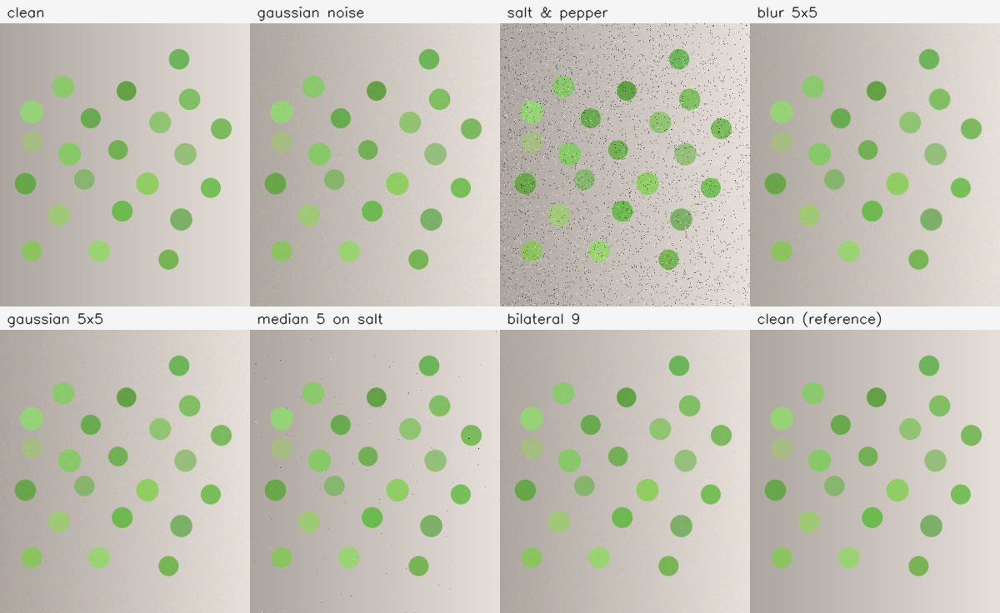
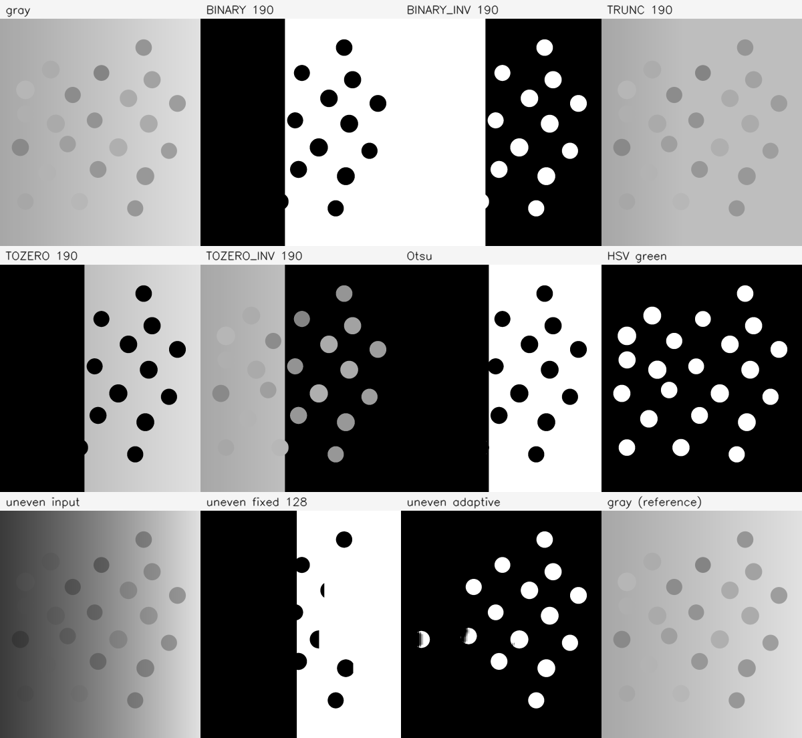
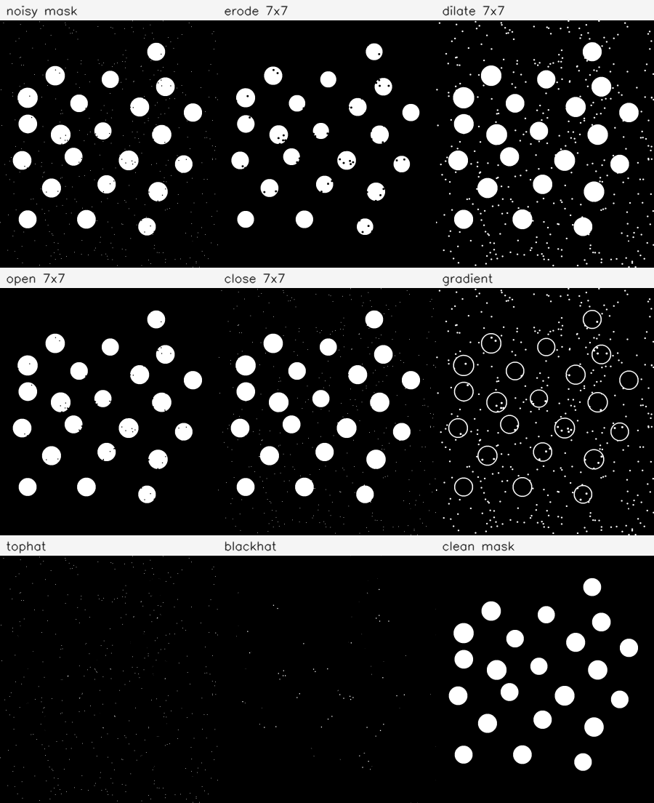
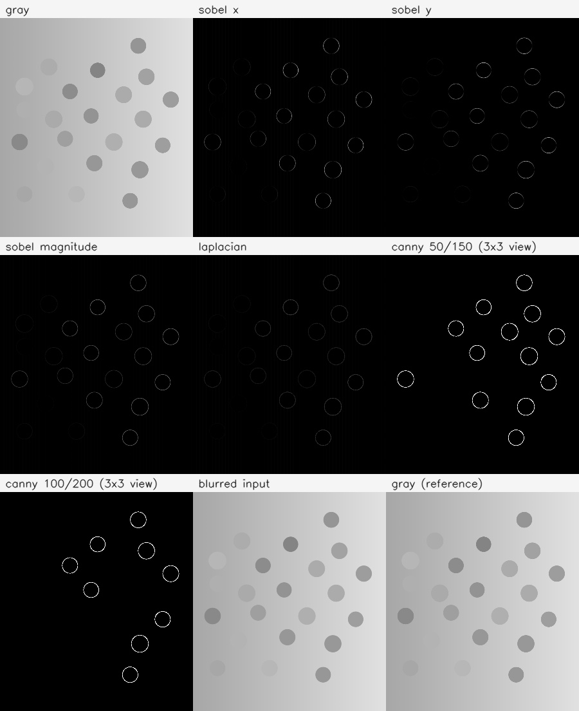
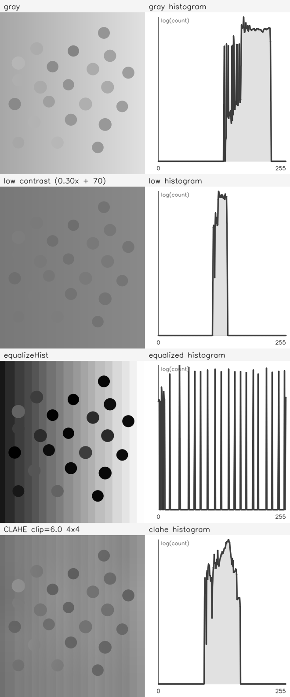
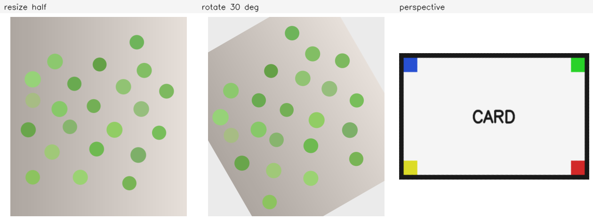
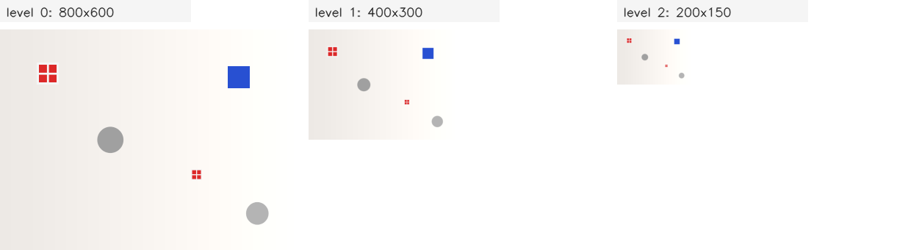
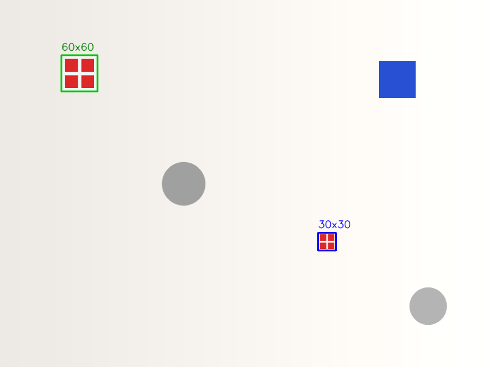

图像处理
这一部分处理颜色检测之前最常见的图像处理步骤：先抑制噪声，再把目标与背景分开， 清理掩码，提取边缘，判断曝光，最后对图像做缩放、旋转与透视矫正。 每一课给出完整程序、真实输出与结果图，并说明参数改变后结果如何变化。
读本部分之前，需要先读
1.1（Mat 的内存模型）、
1.2（读、写、显示与错误处理）、
1.3（像素、ROI 与克隆）、
1.4（颜色空间：BGR、灰度、HSV）与
1.5（绘制、掩码与标注）。
例子在 示例代码 目录中运行，读写的素材在 素材 目录下。
下面的命令在课程文件夹 lessons/opencv（本页所在目录）下执行。
/tmp 是系统存放临时文件的目录，电脑重启后可能被清空。
如果没有按第 0 部分 0.1 准备过练习目录，或者准备之后重启过电脑，
先执行下面几行，再开始这一部分：
rm -rf /tmp/opencv-course
mkdir -p /tmp/opencv-course
cp -r 示例代码 素材 /tmp/opencv-course/
cd /tmp/opencv-course/示例代码
第一行会删除整个练习副本，路径不要改成自己的目录。复制完成后，
用 pwd 确认当前目录是 /tmp/opencv-course/示例代码。
2.1平滑与去噪
图像在采集和传输中会混入噪声。滤波用邻域像素的加权结果或排序结果替换中心像素， 从而降低噪声的随机波动。不同滤波器对噪声类型、边缘和细节的保留程度不同， 选择依据是噪声分布与后续任务，而不是只看画面是否变平滑。
四种滤波器的分工
cv::blur 做方框平均，邻域内每个像素权重相同；
cv::GaussianBlur 按二维高斯权重加权，中心权重最大；
cv::medianBlur 取邻域像素的中值，不产生新的灰度值；
cv::bilateralFilter 同时考虑空间距离与灰度差，灰度差大的邻域像素权重小。
GaussianBlur 与 medianBlur 的核大小必须为奇数；
blur 可以接受偶数核。本课统一用 3、5、7，便于对照。
cv::blur(src, dst, cv::Size(5, 5));
cv::GaussianBlur(src, dst, cv::Size(5, 5), 0);
cv::medianBlur(src, dst, 5);
cv::bilateralFilter(src, dst, 9, 50, 50);
GaussianBlur 的第四个参数是 sigmaX；写成 0 时，
OpenCV 按核大小推导一个标准差。bilateralFilter 的第二个参数
d 是邻域直径，后两个参数分别是灰度差与空间距离的标准差。
d 不大于 0 时，邻域直径由 sigmaSpace 推导。
噪声类型与选择
高斯噪声给每个像素叠加一个近似正态分布的随机量，噪声遍布整幅图； 椒盐噪声把少量像素替换成 0 或 255，表现为孤立的黑点与白点。 方框平均与高斯滤波对高斯噪声有效，但会把椒盐点摊开成小斑； 中值滤波对椒盐噪声最有效，因为孤立的极值在排序后落到中间值之外。 双边滤波在平滑的同时保留强边缘，代价是计算量明显增加。
滤波通常放在阈值、边缘与轮廓之前，用于降低噪声引起的假目标与断裂。 滤波也会削弱细节，核越大，边缘越模糊。若后续需要精确的边沿位置， 应先在低分辨率或滤波后的图上搜索，再回到原图局部计算。
完整例子：加噪与比较
程序读入合成小球图，分别叠加固定种子的高斯噪声与椒盐噪声， 再对高斯噪声图做方框、高斯与双边滤波，对椒盐图做中值滤波。 平均绝对误差（MAE）先求两幅图的逐像素绝对差，再转成灰度求均值； MAE 越小表示结果越接近无噪声原图。耗时对每种滤波重复五次取平均。
#include <iostream>
#include <string>
#include <opencv2/core.hpp>
#include <opencv2/imgproc.hpp>
#include <opencv2/imgcodecs.hpp>
namespace {
cv::Mat add_gaussian_noise(const cv::Mat& source, double sigma) {
cv::Mat noisy = source.clone();
cv::RNG rng(20261021);
for (int y = 0; y < noisy.rows; ++y) {
for (int x = 0; x < noisy.cols; ++x) {
cv::Vec3b& pixel = noisy.at<cv::Vec3b>(y, x);
for (int c = 0; c < 3; ++c) {
pixel[c] = cv::saturate_cast<uchar>(
static_cast<double>(pixel[c]) + rng.gaussian(sigma));
}
}
}
return noisy;
}
cv::Mat add_salt_pepper(const cv::Mat& source, int count) {
cv::Mat noisy = source.clone();
cv::RNG rng(20261022);
for (int i = 0; i < count; ++i) {
const int x = rng.uniform(1, noisy.cols - 1);
const int y = rng.uniform(1, noisy.rows - 1);
const cv::Scalar color =
(i % 2 == 0) ? cv::Scalar(0, 0, 0) : cv::Scalar(255, 255, 255);
cv::rectangle(noisy, cv::Rect(x - 1, y - 1, 3, 3), color,
cv::FILLED);
}
return noisy;
}
double mean_abs_diff(const cv::Mat& a, const cv::Mat& b) {
cv::Mat diff;
cv::absdiff(a, b, diff);
cv::Mat gray;
cv::cvtColor(diff, gray, cv::COLOR_BGR2GRAY);
return cv::mean(gray)[0];
}
double measure_ms(const cv::Mat& input, int mode) {
cv::Mat output;
const int repeats = 5;
const int64 start = cv::getTickCount();
for (int i = 0; i < repeats; ++i) {
if (mode == 0) {
cv::blur(input, output, cv::Size(5, 5));
} else if (mode == 1) {
cv::GaussianBlur(input, output, cv::Size(5, 5), 0);
} else if (mode == 2) {
cv::medianBlur(input, output, 5);
} else {
cv::bilateralFilter(input, output, 9, 50, 50);
}
}
const double ticks = static_cast<double>(cv::getTickCount() - start);
return ticks * 1000.0 / cv::getTickFrequency() / repeats;
}
void put_label(cv::Mat& panel, const cv::Mat& cell, int col, int row,
const std::string& text) {
const int cell_width = 300;
const int cell_height = 340;
const int label_height = 28;
const int x = col * cell_width;
const int y = row * (cell_height + label_height);
cv::Mat resized;
cv::resize(cell, resized, cv::Size(cell_width, cell_height), 0, 0,
cv::INTER_AREA);
resized.copyTo(panel(cv::Rect(x, y + label_height, cell_width,
cell_height)));
cv::rectangle(panel, cv::Rect(x, y, cell_width, label_height),
cv::Scalar(245, 245, 245), cv::FILLED);
cv::putText(panel, text, cv::Point(x + 8, y + 20),
cv::FONT_HERSHEY_SIMPLEX, 0.55, cv::Scalar(30, 30, 30), 1,
cv::LINE_AA);
}
} // namespace
int main() {
const std::string path = "../素材/synth_balls.png";
cv::Mat clean = cv::imread(path, cv::IMREAD_COLOR);
if (clean.empty()) {
std::cout << "无法读取：" << path << '\n';
return 1;
}
const cv::Mat gaussian_noise = add_gaussian_noise(clean, 14.0);
const cv::Mat salt_pepper =
add_salt_pepper(clean, clean.rows * clean.cols / 300);
cv::Mat blur;
cv::Mat gaussian;
cv::Mat median;
cv::Mat bilateral;
cv::blur(gaussian_noise, blur, cv::Size(5, 5));
cv::GaussianBlur(gaussian_noise, gaussian, cv::Size(5, 5), 0);
cv::medianBlur(salt_pepper, median, 5);
cv::bilateralFilter(gaussian_noise, bilateral, 9, 50, 50);
std::cout << "clean to gaussian noise mae="
<< cv::format("%.2f", mean_abs_diff(clean, gaussian_noise))
<< '\n';
std::cout << "clean to salt&pepper mae="
<< cv::format("%.2f", mean_abs_diff(clean, salt_pepper))
<< '\n';
std::cout << "blur mae="
<< cv::format("%.2f", mean_abs_diff(clean, blur)) << '\n';
std::cout << "gaussian mae="
<< cv::format("%.2f", mean_abs_diff(clean, gaussian)) << '\n';
std::cout << "median on salt&pepper mae="
<< cv::format("%.2f", mean_abs_diff(clean, median)) << '\n';
std::cout << "bilateral mae="
<< cv::format("%.2f", mean_abs_diff(clean, bilateral)) << '\n';
std::cout << "time blur="
<< cv::format("%.2f", measure_ms(gaussian_noise, 0)) << " ms\n";
std::cout << "time gaussian="
<< cv::format("%.2f", measure_ms(gaussian_noise, 1)) << " ms\n";
std::cout << "time median="
<< cv::format("%.2f", measure_ms(salt_pepper, 2)) << " ms\n";
std::cout << "time bilateral="
<< cv::format("%.2f", measure_ms(gaussian_noise, 3))
<< " ms\n";
cv::Mat panel(2 * (340 + 28), 4 * 300, CV_8UC3, cv::Scalar(255, 255, 255));
put_label(panel, clean, 0, 0, "clean");
put_label(panel, gaussian_noise, 1, 0, "gaussian noise");
put_label(panel, salt_pepper, 2, 0, "salt & pepper");
put_label(panel, blur, 3, 0, "blur 5x5");
put_label(panel, gaussian, 0, 1, "gaussian 5x5");
put_label(panel, median, 1, 1, "median 5 on salt");
put_label(panel, bilateral, 2, 1, "bilateral 9");
put_label(panel, clean, 3, 1, "clean (reference)");
const bool saved = cv::imwrite("out_smooth.png", panel);
std::cout << "saved out_smooth.png: " << (saved ? "yes" : "no") << '\n';
return 0;
}编译并运行：
g++ -std=c++17 -Wall -Wextra 2.1-smooth_denoise.cpp -o smooth_denoise \
$(pkg-config --cflags --libs opencv4)
./smooth_denoiseclean to gaussian noise mae=11.16 clean to salt&pepper mae=3.77 blur mae=2.36 gaussian mae=3.11 median on salt&pepper mae=0.11 bilateral mae=2.48 time blur=1.43 ms time gaussian=0.23 ms time median=8.60 ms time bilateral=6.83 ms saved out_smooth.png: yes
两组噪声的 MAE 不能直接比较：高斯噪声图的 MAE 是 11.16，椒盐图的 MAE 是 3.77， 但椒盐图的噪声点更集中。滤波结果也只能与对应的噪声图比较： 方框、高斯与双边滤波处理的是高斯噪声图，MAE 分别为 2.36、3.11 与 2.48； 中值滤波处理的是椒盐图，MAE 为 0.11。中值滤波在这个孤点噪声上优势明显。
耗时分别为 1.43、0.23、8.60 与 6.83 毫秒。高斯滤波可以分解为两次一维卷积， 在这个尺寸上最快；中值滤波需要排序，双边滤波需要逐邻域计算灰度权重， 两者都明显慢于前两者。耗时与机器、编译选项和图像尺寸有关， 这里只用于比较同一次运行中的相对快慢。

速度、参数与副作用
GaussianBlur 的核大小必须为奇数，medianBlur 还要求
核大小大于 1；把 cv::Size(4, 4) 传给 GaussianBlur
或把偶数传给 medianBlur，OpenCV 会抛出断言错误。
blur 可以接受偶数核，本课仍统一用奇数。
核越大，平滑越强，边缘与小球边界也越模糊。
双边滤波的 sigmaColor 控制“多大的灰度差仍被视为同一区域”。
该值过大时，双边滤波接近高斯滤波；过小时，噪声几乎不被平滑。
sigmaSpace 控制空间邻域的范围。中值滤波只适合椒盐类噪声，
对高斯噪声的效果通常不如高斯滤波。
滤波后再做精细定位会引入系统偏移：平滑会把边缘两侧的灰度平均， 使检测到的边沿向灰度较低的一侧移动。需要亚像素位置时，应在原图上做局部拟合， 或使用不改变边缘位置的检测方法。
题目：创建一个 5×5 的灰度图，所有像素为 100，在中心 (2,2) 写入 255。分别做 3×3 中值滤波与 3×3 高斯滤波，打印中心与左上角 (0,0) 的结果。
完整程序：
#include <iostream>
#include <opencv2/core.hpp>
#include <opencv2/imgproc.hpp>
int main() {
cv::Mat image(5, 5, CV_8UC1, cv::Scalar(100));
image.at<uchar>(2, 2) = 255;
cv::Mat median;
cv::Mat gaussian;
cv::medianBlur(image, median, 3);
cv::GaussianBlur(image, gaussian, cv::Size(3, 3), 0);
std::cout << "median center="
<< static_cast<int>(median.at<uchar>(2, 2)) << '\n';
std::cout << "gaussian center="
<< static_cast<int>(gaussian.at<uchar>(2, 2)) << '\n';
std::cout << "median corner="
<< static_cast<int>(median.at<uchar>(0, 0)) << '\n';
std::cout << "gaussian corner="
<< static_cast<int>(gaussian.at<uchar>(0, 0)) << '\n';
return 0;
}编译并运行：
g++ -std=c++17 -Wall -Wextra 2.1-eg-impulse.cpp -o impulse \
$(pkg-config --cflags --libs opencv4)
./impulsemedian center=100 gaussian center=139 median corner=100 gaussian corner=100
3×3 邻域里有 8 个 100 和 1 个 255，排序后中值是 100，所以中值滤波把脉冲完全去掉；高斯滤波给中心像素较大的权重，中心变成 139。左上角的 3×3 邻域不包含 (2,2)，因此两种滤波都保持 100。
创建一个 7×7 的灰度图，所有像素为 80；把 (3,3) 写成 0，把 (3,4) 写成 255。分别做 3×3 中值滤波与 3×3 高斯滤波，按顺序打印这两个位置在两种结果中的值。
本题不需要标准输入，数据直接写在 main 里。
median pair: [80, 80] gaussian pair: [82, 114]
看答案
中值滤波在每个 3×3 邻域内排序，0 与 255 都落在中间值之外，两个中心都回到 80；高斯滤波按距离加权，0 与 255 会互相影响，分别得到 82 与 114。
#include <iostream>
#include <opencv2/core.hpp>
#include <opencv2/imgproc.hpp>
int main() {
cv::Mat image(7, 7, CV_8UC1, cv::Scalar(80));
image.at<uchar>(3, 3) = 0;
image.at<uchar>(3, 4) = 255;
cv::Mat median;
cv::Mat gaussian;
cv::medianBlur(image, median, 3);
cv::GaussianBlur(image, gaussian, cv::Size(3, 3), 0);
std::cout << "median pair: ["
<< static_cast<int>(median.at<uchar>(3, 3)) << ", "
<< static_cast<int>(median.at<uchar>(3, 4)) << "]\n";
std::cout << "gaussian pair: ["
<< static_cast<int>(gaussian.at<uchar>(3, 3)) << ", "
<< static_cast<int>(gaussian.at<uchar>(3, 4)) << "]\n";
return 0;
}median pair: [80, 80] gaussian pair: [82, 114]
你现在能写什么：给图像叠加固定种子的高斯噪声或椒盐噪声； 按噪声类型选择方框、高斯、中值或双边滤波；解释中值滤波为什么能去掉孤立脉冲； 读懂 MAE 与耗时，并说明滤波对边缘定位的影响。
2.2阈值：固定、Otsu、自适应
阈值按像素值与阈值的比较结果生成输出。BINARY 与
BINARY_INV 得到二值掩码，其余类型保留一部分原灰度。
固定阈值适合光照稳定、目标与背景灰度差明显的图像；Otsu 从直方图自动选阈值；
自适应阈值在每个局部邻域内单独计算阈值，适合光照不均的图像。
三种方法的输入都必须是单通道图。
五种阈值类型
cv::threshold(src, dst, thresh, maxval, type) 对每个像素比较
src 与 thresh。五种类型的行为如下：
| 类型 | 像素值大于阈值时 | 否则 |
|---|---|---|
THRESH_BINARY | maxval | 0 |
THRESH_BINARY_INV | 0 | maxval |
THRESH_TRUNC | thresh | 原值 |
THRESH_TOZERO | 原值 | 0 |
THRESH_TOZERO_INV | 0 | 原值 |
“大于”是严格比较：像素值等于阈值时走“否则”一列。
BINARY 与 BINARY_INV 得到极性相反的掩码；
TRUNC 只截掉高亮部分；TOZERO 与
TOZERO_INV 保留一侧的原灰度。彩色图有三个通道，
直接传给 threshold 会触发断言错误，应先转成灰度，
或用 inRange 在 HSV 空间做颜色范围分割。
Otsu 与自适应阈值
Otsu 方法遍历所有候选阈值，选择使前景与背景类间方差最大的那个。
它适合直方图呈双峰的图像。调用时把阈值参数写成 0，并把
THRESH_OTSU 与 THRESH_BINARY 或
THRESH_BINARY_INV 按位或组合；函数返回实际选出的阈值。
Otsu 只支持 8 位单通道图，且假设整幅图的光照一致。
adaptiveThreshold 对每个像素取一个邻域，用邻域均值
（ADAPTIVE_THRESH_MEAN_C）或高斯加权均值
（ADAPTIVE_THRESH_GAUSSIAN_C）减去偏置 C
作为该像素的阈值。块大小必须是大于 1 的奇数。在
THRESH_BINARY_INV 下，偏置 C 越大，被判为前景的
像素越少；THRESH_BINARY 的方向相反。下面的例子用
THRESH_BINARY_INV，因为小球比局部背景暗。
完整例子：五种类型与光照不均
程序先对合成图做五种固定阈值，再用 Otsu 选阈值，用 HSV 的
inRange 分割绿色。随后把灰度图按从左到右的线性比例压暗，
模拟光照不均，比较固定阈值与自适应阈值。所有掩码的前景像素数都打印出来，
便于核对参数改变后的差异。
#include <iostream>
#include <string>
#include <opencv2/core.hpp>
#include <opencv2/imgproc.hpp>
#include <opencv2/imgcodecs.hpp>
namespace {
void add_cell(cv::Mat& panel, const cv::Mat& image, int index,
const std::string& label, int columns, int cell_width,
int cell_height) {
const int label_height = 28;
const int col = index % columns;
const int row = index / columns;
const int x = col * cell_width;
const int y = row * (cell_height + label_height);
cv::Mat color;
if (image.channels() == 1) {
cv::cvtColor(image, color, cv::COLOR_GRAY2BGR);
} else {
color = image;
}
cv::Mat resized;
cv::resize(color, resized, cv::Size(cell_width, cell_height), 0, 0,
cv::INTER_AREA);
resized.copyTo(panel(cv::Rect(x, y + label_height, cell_width,
cell_height)));
cv::rectangle(panel, cv::Rect(x, y, cell_width, label_height),
cv::Scalar(245, 245, 245), cv::FILLED);
cv::putText(panel, label, cv::Point(x + 8, y + 20),
cv::FONT_HERSHEY_SIMPLEX, 0.55, cv::Scalar(30, 30, 30), 1,
cv::LINE_AA);
}
} // namespace
int main() {
const std::string path = "../素材/synth_balls.png";
cv::Mat image = cv::imread(path, cv::IMREAD_COLOR);
if (image.empty()) {
std::cout << "无法读取：" << path << '\n';
return 1;
}
cv::Mat gray;
cv::cvtColor(image, gray, cv::COLOR_BGR2GRAY);
const char* names[] = {"BINARY", "BINARY_INV", "TRUNC", "TOZERO",
"TOZERO_INV"};
const int types[] = {cv::THRESH_BINARY, cv::THRESH_BINARY_INV,
cv::THRESH_TRUNC, cv::THRESH_TOZERO,
cv::THRESH_TOZERO_INV};
cv::Mat masks[5];
for (int i = 0; i < 5; ++i) {
cv::threshold(gray, masks[i], 190, 255, types[i]);
std::cout << names[i] << " nonzero=" << cv::countNonZero(masks[i])
<< '\n';
}
cv::Mat otsu_mask;
const double otsu = cv::threshold(gray, otsu_mask, 0, 255,
cv::THRESH_BINARY | cv::THRESH_OTSU);
std::cout << "otsu threshold=" << cv::format("%.1f", otsu)
<< " nonzero=" << cv::countNonZero(otsu_mask) << '\n';
cv::Mat hsv;
cv::cvtColor(image, hsv, cv::COLOR_BGR2HSV);
cv::Mat green_mask;
cv::inRange(hsv, cv::Scalar(35, 43, 46), cv::Scalar(85, 255, 255),
green_mask);
std::cout << "green inRange nonzero=" << cv::countNonZero(green_mask)
<< '\n';
cv::Mat uneven(gray.size(), CV_8UC1);
for (int y = 0; y < gray.rows; ++y) {
for (int x = 0; x < gray.cols; ++x) {
const double scale = 0.35 + 0.65 * x / (gray.cols - 1);
uneven.at<uchar>(y, x) = cv::saturate_cast<uchar>(
gray.at<uchar>(y, x) * scale);
}
}
cv::Mat uneven_fixed;
cv::threshold(uneven, uneven_fixed, 128, 255, cv::THRESH_BINARY);
std::cout << "uneven fixed nonzero=" << cv::countNonZero(uneven_fixed)
<< '\n';
cv::Mat adaptive_mask;
cv::adaptiveThreshold(uneven, adaptive_mask, 255,
cv::ADAPTIVE_THRESH_MEAN_C,
cv::THRESH_BINARY_INV, 151, 10);
std::cout << "adaptive block=151 C=10 nonzero="
<< cv::countNonZero(adaptive_mask) << '\n';
cv::Mat panel(3 * (340 + 28), 4 * 300, CV_8UC3,
cv::Scalar(255, 255, 255));
add_cell(panel, gray, 0, "gray", 4, 300, 340);
add_cell(panel, masks[0], 1, "BINARY 190", 4, 300, 340);
add_cell(panel, masks[1], 2, "BINARY_INV 190", 4, 300, 340);
add_cell(panel, masks[2], 3, "TRUNC 190", 4, 300, 340);
add_cell(panel, masks[3], 4, "TOZERO 190", 4, 300, 340);
add_cell(panel, masks[4], 5, "TOZERO_INV 190", 4, 300, 340);
add_cell(panel, otsu_mask, 6, "Otsu", 4, 300, 340);
add_cell(panel, green_mask, 7, "HSV green", 4, 300, 340);
add_cell(panel, uneven, 8, "uneven input", 4, 300, 340);
add_cell(panel, uneven_fixed, 9, "uneven fixed 128", 4, 300, 340);
add_cell(panel, adaptive_mask, 10, "uneven adaptive", 4, 300, 340);
add_cell(panel, gray, 11, "gray (reference)", 4, 300, 340);
const bool saved = cv::imwrite("out_threshold.png", panel);
std::cout << "saved out_threshold.png: " << (saved ? "yes" : "no")
<< '\n';
return 0;
}编译并运行：
g++ -std=c++17 -Wall -Wextra 2.2-threshold.cpp -o threshold \
$(pkg-config --cflags --libs opencv4)
./thresholdBINARY nonzero=827022 BINARY_INV nonzero=767119 TRUNC nonzero=1594141 TOZERO nonzero=827022 TOZERO_INV nonzero=767119 otsu threshold=191.0 nonzero=801525 green inRange nonzero=176149 uneven fixed nonzero=786336 adaptive block=151 C=10 nonzero=109697 saved out_threshold.png: yes
固定阈值 190 下，BINARY 与 TOZERO 的前景像素数相同，
都是 827022，因为两者在大于阈值时都保留非零值；区别在于
BINARY 把前景统一成 255，TOZERO 保留原灰度。
TRUNC 的前景数是整幅图的像素总数 1594141，因为截断后所有像素都非零。
Otsu 选出的阈值是 191.0，前景数为 801525。
光照不均的输入上，固定阈值 128 得到 786336 个前景像素，右侧大面积背景被误判； 自适应阈值使用 151×151 的邻域与偏置 10，得到 109697 个前景像素， 更接近绿色小球的实际面积。151 是奇数，邻域足够覆盖一个小球及其周围背景。

参数与常见错误
最常出现的错误是把三通道图直接传给 threshold。此时 OpenCV
报断言失败，程序终止；应先用 cvtColor 转灰度，或在 HSV 图上
用 inRange。第二个常见错误是掩码极性反了：
BINARY 让亮目标为白，BINARY_INV 让暗目标为白。
后续的形态学与轮廓默认把白色当作前景，极性反了会得到完全不同的结果。
自适应阈值的块大小写成偶数会触发断言；块太小会把球面纹理当背景，
块太大则接近全局阈值。在 THRESH_BINARY_INV 下，偏置
C 为负值时阈值升高、前景增多；为正值时阈值降低、前景减少。
THRESH_BINARY 的方向相反。Otsu 只在双峰直方图上可靠；
当背景亮度从一侧到另一侧连续变化时，直方图被摊平，Otsu 选出的单一阈值
无法同时适应两侧。
题目：创建一个 2×4 的灰度图，按行填入 0、60、120、180、240、255、100、200。以 128 为阈值，分别做 THRESH_BINARY 与 THRESH_TRUNC，按行打印结果。
完整程序：
#include <algorithm>
#include <iostream>
#include <opencv2/core.hpp>
#include <opencv2/imgproc.hpp>
namespace {
void print_matrix(const cv::Mat& image) {
for (int row = 0; row < image.rows; ++row) {
std::cout << '[';
for (int col = 0; col < image.cols; ++col) {
if (col != 0) {
std::cout << ", ";
}
std::cout << static_cast<int>(image.at<uchar>(row, col));
}
std::cout << "]\n";
}
}
} // namespace
int main() {
const unsigned char values[] = {0, 60, 120, 180, 240, 255, 100, 200};
cv::Mat image(2, 4, CV_8UC1);
std::copy(values, values + 8, image.ptr<uchar>(0));
cv::Mat binary;
cv::Mat truncated;
cv::threshold(image, binary, 128, 255, cv::THRESH_BINARY);
cv::threshold(image, truncated, 128, 255, cv::THRESH_TRUNC);
std::cout << "BINARY 128:\n";
print_matrix(binary);
std::cout << "TRUNC 128:\n";
print_matrix(truncated);
return 0;
}编译并运行：
g++ -std=c++17 -Wall -Wextra 2.2-eg-threshold_table.cpp -o threshold_table \
$(pkg-config --cflags --libs opencv4)
./threshold_tableBINARY 128: [0, 0, 0, 255] [255, 255, 0, 255] TRUNC 128: [0, 60, 120, 128] [128, 128, 100, 128]
128 本身不大于 128，所以在 BINARY 中变成 0，在 TRUNC 中保留 128。小于阈值的像素在 BINARY 中变成 0；在 TRUNC 中保持原值。大于阈值的像素在 BINARY 中变成 255，在 TRUNC 中被压到 128。
创建一个 2×4 的灰度图，按行填入 10、70、130、190、250、100、160、220。以 150 为阈值，分别做 THRESH_BINARY_INV 与 THRESH_TOZERO，按行打印结果。
本题不需要标准输入，数据直接写在 main 里。
BINARY_INV 150: [255, 255, 255, 0] [0, 255, 0, 0] TOZERO 150: [0, 0, 0, 190] [250, 0, 160, 220]
看答案
BINARY_INV 把大于 150 的像素置 0，其余置 255；TOZERO 把不大于 150 的像素置 0，其余保留原值。190、250、160、220 是保留下来的四个高值。
#include <algorithm>
#include <iostream>
#include <opencv2/core.hpp>
#include <opencv2/imgproc.hpp>
namespace {
void print_matrix(const cv::Mat& image) {
for (int row = 0; row < image.rows; ++row) {
std::cout << '[';
for (int col = 0; col < image.cols; ++col) {
if (col != 0) {
std::cout << ", ";
}
std::cout << static_cast<int>(image.at<uchar>(row, col));
}
std::cout << "]\n";
}
}
} // namespace
int main() {
const unsigned char values[] = {10, 70, 130, 190,
250, 100, 160, 220};
cv::Mat image(2, 4, CV_8UC1);
std::copy(values, values + 8, image.ptr<uchar>(0));
cv::Mat inverted;
cv::Mat tozero;
cv::threshold(image, inverted, 150, 255, cv::THRESH_BINARY_INV);
cv::threshold(image, tozero, 150, 255, cv::THRESH_TOZERO);
std::cout << "BINARY_INV 150:\n";
print_matrix(inverted);
std::cout << "TOZERO 150:\n";
print_matrix(tozero);
return 0;
}BINARY_INV 150: [255, 255, 255, 0] [0, 255, 0, 0] TOZERO 150: [0, 0, 0, 190] [250, 0, 160, 220]
你现在能写什么：对灰度图写出五种阈值；用 Otsu 自动选阈值并读出返回值； 在光照不均的图上选择自适应阈值并解释块大小与偏置的作用； 判断掩码极性是否与后续处理匹配。
2.3形态学：腐蚀、膨胀、开、闭
阈值得到的掩码常有小噪声、小孔与断裂。形态学用一个结构元在掩码上滑动， 按局部最小或最大值改写中心像素。腐蚀让白色区域收缩，膨胀让白色区域扩张； 把两者按不同顺序组合，就能去掉小噪声、填补小孔或连接邻近区域。
结构元、腐蚀与膨胀
getStructuringElement 生成结构元，形状可选矩形
MORPH_RECT、椭圆 MORPH_ELLIPSE 与十字
MORPH_CROSS。尺寸写成 cv::Size(k, k)，
k 为奇数时结构元有明确的中心。圆形目标通常用椭圆结构元，
水平和垂直结构用十字更合适。
erode 取结构元覆盖区域的最小值：白色前景中的小突起被削掉，
整体向内收缩。dilate 取最大值：白色区域向外扩张，
小孔与裂缝被填上。对二值掩码，腐蚀与膨胀也可以理解为“前景像素是否
全部/任一落在结构元内”。核越大，收缩或扩张越明显。
开、闭与派生运算
morphologyEx 组合基本运算：
| 操作 | 等价过程 | 典型作用 |
|---|---|---|
MORPH_OPEN | 先腐蚀，再膨胀 | 去掉小白色噪声，保持大目标尺寸 |
MORPH_CLOSE | 先膨胀，再腐蚀 | 填小孔，连接窄断裂 |
MORPH_GRADIENT | 膨胀图减腐蚀图 | 得到目标边界带 |
MORPH_TOPHAT | 原图减开运算 | 突出比核小的亮细节 |
MORPH_BLACKHAT | 闭运算减原图 | 突出比核小的暗细节 |
开运算先腐蚀去掉小噪声，再膨胀恢复大目标的尺寸，因此大目标面积基本不变； 闭运算先膨胀填孔，再腐蚀恢复外轮廓。开运算不能填孔，闭运算不能去白噪声。 若先闭后开，闭运算可能先把相邻目标连成一片，开运算无法保证再把它们分开。
完整例子：清理噪声掩码
程序由绿色范围得到干净掩码，再向掩码中加入 400 个 3×3 白点和 400 个
5×5 黑点，模拟阈值后的小噪声与小孔。使用 7×7 椭圆结构元分别做腐蚀、
膨胀、开、闭、梯度、顶帽与黑帽，并统计每种结果的非零像素数与外部轮廓数。
其中外部轮廓数用 findContours 统计；这里只关心数量，
函数细节见第 3 部分。
#include <iostream>
#include <string>
#include <vector>
#include <opencv2/core.hpp>
#include <opencv2/imgproc.hpp>
#include <opencv2/imgcodecs.hpp>
namespace {
void add_cell(cv::Mat& panel, const cv::Mat& image, int index,
const std::string& label, int columns, int cell_width,
int cell_height) {
const int label_height = 28;
const int col = index % columns;
const int row = index / columns;
const int x = col * cell_width;
const int y = row * (cell_height + label_height);
cv::Mat color;
if (image.channels() == 1) {
cv::cvtColor(image, color, cv::COLOR_GRAY2BGR);
} else {
color = image;
}
cv::Mat resized;
cv::resize(color, resized, cv::Size(cell_width, cell_height), 0, 0,
cv::INTER_AREA);
resized.copyTo(panel(cv::Rect(x, y + label_height, cell_width,
cell_height)));
cv::rectangle(panel, cv::Rect(x, y, cell_width, label_height),
cv::Scalar(245, 245, 245), cv::FILLED);
cv::putText(panel, label, cv::Point(x + 8, y + 20),
cv::FONT_HERSHEY_SIMPLEX, 0.55, cv::Scalar(30, 30, 30), 1,
cv::LINE_AA);
}
int contour_count(const cv::Mat& mask) {
std::vector<std::vector<cv::Point>> contours;
cv::findContours(mask.clone(), contours, cv::RETR_EXTERNAL,
cv::CHAIN_APPROX_SIMPLE);
return static_cast<int>(contours.size());
}
} // namespace
int main() {
const std::string path = "../素材/synth_balls.png";
cv::Mat image = cv::imread(path, cv::IMREAD_COLOR);
if (image.empty()) {
std::cout << "无法读取：" << path << '\n';
return 1;
}
cv::Mat hsv;
cv::cvtColor(image, hsv, cv::COLOR_BGR2HSV);
cv::Mat clean_mask;
cv::inRange(hsv, cv::Scalar(35, 43, 46), cv::Scalar(85, 255, 255),
clean_mask);
cv::Mat noisy = clean_mask.clone();
cv::RNG rng(20261023);
for (int i = 0; i < 400; ++i) {
const int x = rng.uniform(0, noisy.cols - 3);
const int y = rng.uniform(0, noisy.rows - 3);
cv::rectangle(noisy, cv::Rect(x, y, 3, 3), cv::Scalar(255),
cv::FILLED);
}
for (int i = 0; i < 400; ++i) {
const int x = rng.uniform(0, noisy.cols - 5);
const int y = rng.uniform(0, noisy.rows - 5);
cv::rectangle(noisy, cv::Rect(x, y, 5, 5), cv::Scalar(0),
cv::FILLED);
}
const cv::Mat kernel =
cv::getStructuringElement(cv::MORPH_ELLIPSE, cv::Size(7, 7));
cv::Mat eroded;
cv::Mat dilated;
cv::Mat opened;
cv::Mat closed;
cv::Mat gradient;
cv::Mat tophat;
cv::Mat blackhat;
cv::erode(noisy, eroded, kernel);
cv::dilate(noisy, dilated, kernel);
cv::morphologyEx(noisy, opened, cv::MORPH_OPEN, kernel);
cv::morphologyEx(noisy, closed, cv::MORPH_CLOSE, kernel);
cv::morphologyEx(noisy, gradient, cv::MORPH_GRADIENT, kernel);
cv::morphologyEx(noisy, tophat, cv::MORPH_TOPHAT, kernel);
cv::morphologyEx(noisy, blackhat, cv::MORPH_BLACKHAT, kernel);
struct Row {
const char* name;
const cv::Mat* mask;
bool binary;
};
const Row rows[] = {
{"noisy", &noisy, true}, {"erode", &eroded, true},
{"dilate", &dilated, true}, {"open", &opened, true},
{"close", &closed, true}, {"gradient", &gradient, false},
{"tophat", &tophat, false}, {"blackhat", &blackhat, false},
{"clean", &clean_mask, true}};
for (const Row& row : rows) {
std::cout << row.name << " nonzero="
<< cv::countNonZero(*row.mask);
if (row.binary) {
std::cout << " contours=" << contour_count(*row.mask);
}
std::cout << '\n';
}
cv::Mat panel(3 * (340 + 28), 3 * 300, CV_8UC3,
cv::Scalar(255, 255, 255));
add_cell(panel, noisy, 0, "noisy mask", 3, 300, 340);
add_cell(panel, eroded, 1, "erode 7x7", 3, 300, 340);
add_cell(panel, dilated, 2, "dilate 7x7", 3, 300, 340);
add_cell(panel, opened, 3, "open 7x7", 3, 300, 340);
add_cell(panel, closed, 4, "close 7x7", 3, 300, 340);
add_cell(panel, gradient, 5, "gradient", 3, 300, 340);
add_cell(panel, tophat, 6, "tophat", 3, 300, 340);
add_cell(panel, blackhat, 7, "blackhat", 3, 300, 340);
add_cell(panel, clean_mask, 8, "clean mask", 3, 300, 340);
const bool saved = cv::imwrite("out_morph.png", panel);
std::cout << "saved out_morph.png: " << (saved ? "yes" : "no") << '\n';
return 0;
}编译并运行：
g++ -std=c++17 -Wall -Wextra 2.3-morphology.cpp -o morphology \
$(pkg-config --cflags --libs opencv4)
./morphologynoisy nonzero=178234 contours=379 erode nonzero=152026 contours=22 dilate nonzero=220322 contours=361 open nonzero=174662 contours=22 close nonzero=179463 contours=367 gradient nonzero=68296 tophat nonzero=3572 blackhat nonzero=1229 clean nonzero=176149 contours=22 saved out_morph.png: yes
噪声掩码有 178234 个非零像素与 379 个外部轮廓；干净掩码是 176149 个 非零像素与 22 个轮廓。开运算得到 174662 个非零像素与 22 个轮廓， 白点噪声基本被去掉，轮廓数回到目标数；闭运算得到 179463 个非零像素与 367 个轮廓，它填上了小球内部的黑孔，但没有去掉外面的白点，所以轮廓数仍然很多。 这说明开与闭针对的是两类不同噪声，不能互相替代。
腐蚀把非零像素降到 152026，轮廓数降到 22，但每个球都变小了； 膨胀把非零像素升到 220322，轮廓数仍有 361，因为白点也被放大。 梯度只保留边界带，非零像素为 68296；顶帽与黑帽分别突出亮细节与暗细节， 非零像素为 3572 与 1229。

核大小与运算顺序
核大小应相对于目标的像素尺寸选择，而不是固定写成 7×7。图像分辨率提高一倍时， 同一个物理目标占用的像素数也大约翻倍，核也应随之调整。核大于相邻目标的间距时， 膨胀或闭运算会把它们连成一个轮廓；核小于噪声尺寸时，开运算去不掉噪声。
清理掩码的常用顺序是先开运算去小白点，再闭运算填小黑孔。反过来先闭后开，
闭运算可能把靠近的目标连接起来，开运算只能缩小连接处，无法保证重新分开。
本课只把形态学用于单通道掩码。彩色图也能直接做形态学，但每个通道独立处理，
结果的彩色关系不再有明确意义。需要处理彩色图时，应先得到掩码，
再用掩码对原图做 copyTo 或 bitwise_and。
题目：创建一个 9×9 的二值掩码，在 Rect(2, 2, 4, 4) 内填白，再在 (7,7) 放一个孤立白点。用 3×3 矩形结构元分别做腐蚀与开运算，打印输入、腐蚀结果与开结果的非零像素数和外部轮廓数。
完整程序：
#include <iostream>
#include <vector>
#include <opencv2/core.hpp>
#include <opencv2/imgproc.hpp>
namespace {
int count_contours(const cv::Mat& mask) {
std::vector<std::vector<cv::Point>> contours;
cv::findContours(mask.clone(), contours, cv::RETR_EXTERNAL,
cv::CHAIN_APPROX_SIMPLE);
return static_cast<int>(contours.size());
}
} // namespace
int main() {
cv::Mat mask = cv::Mat::zeros(9, 9, CV_8UC1);
cv::rectangle(mask, cv::Rect(2, 2, 4, 4), cv::Scalar(255), cv::FILLED);
mask.at<uchar>(7, 7) = 255;
const cv::Mat kernel =
cv::getStructuringElement(cv::MORPH_RECT, cv::Size(3, 3));
cv::Mat eroded;
cv::Mat opened;
cv::erode(mask, eroded, kernel);
cv::morphologyEx(mask, opened, cv::MORPH_OPEN, kernel);
std::cout << "input nonzero=" << cv::countNonZero(mask)
<< " contours=" << count_contours(mask) << '\n';
std::cout << "erode nonzero=" << cv::countNonZero(eroded)
<< " contours=" << count_contours(eroded) << '\n';
std::cout << "open nonzero=" << cv::countNonZero(opened)
<< " contours=" << count_contours(opened) << '\n';
return 0;
}编译并运行：
g++ -std=c++17 -Wall -Wextra 2.3-eg-open_pixel.cpp -o open_pixel \
$(pkg-config --cflags --libs opencv4)
./open_pixelinput nonzero=17 contours=2 erode nonzero=4 contours=1 open nonzero=16 contours=1
腐蚀把 4×4 方块缩成 2×2，同时去掉孤立点，非零像素从 17 降到 4；开运算再膨胀回 4×4，非零像素回到 16，孤立点没有恢复。输入有两个外部轮廓，腐蚀与开运算都只剩一个。
创建一个 10×10 的二值掩码，在 Rect(1, 3, 3, 3) 与 Rect(5, 3, 3, 3) 各填一个 3×3 白方块，两块之间隔一列。用 3×3 矩形结构元做闭运算，打印处理前后的非零像素数与外部轮廓数。
本题不需要标准输入，数据直接写在 main 里。
before nonzero=18 contours=2 after nonzero=24 contours=1
看答案
闭运算的膨胀先把两个方块在中间一列接上，随后的腐蚀保留连接处，两个外部轮廓合成一个。非零像素数从 18 增加到 24，轮廓数从 2 降到 1。
#include <iostream>
#include <vector>
#include <opencv2/core.hpp>
#include <opencv2/imgproc.hpp>
namespace {
int count_contours(const cv::Mat& mask) {
std::vector<std::vector<cv::Point>> contours;
cv::findContours(mask.clone(), contours, cv::RETR_EXTERNAL,
cv::CHAIN_APPROX_SIMPLE);
return static_cast<int>(contours.size());
}
} // namespace
int main() {
cv::Mat mask = cv::Mat::zeros(10, 10, CV_8UC1);
cv::rectangle(mask, cv::Rect(1, 3, 3, 3), cv::Scalar(255), cv::FILLED);
cv::rectangle(mask, cv::Rect(5, 3, 3, 3), cv::Scalar(255), cv::FILLED);
const cv::Mat kernel =
cv::getStructuringElement(cv::MORPH_RECT, cv::Size(3, 3));
cv::Mat closed;
cv::morphologyEx(mask, closed, cv::MORPH_CLOSE, kernel);
std::cout << "before nonzero=" << cv::countNonZero(mask)
<< " contours=" << count_contours(mask) << '\n';
std::cout << "after nonzero=" << cv::countNonZero(closed)
<< " contours=" << count_contours(closed) << '\n';
return 0;
}before nonzero=18 contours=2 after nonzero=24 contours=1
你现在能写什么：按目标形状选择矩形、椭圆或十字结构元； 用腐蚀与膨胀改变掩码的尺寸；用开运算去小白点、闭运算填小黑孔； 统计处理前后的非零像素与轮廓数，并解释核大小与运算顺序的影响。
2.4边缘：Sobel、Laplacian、Canny
边缘是灰度变化明显的像素集合。Sobel 用一阶差分估计水平与垂直方向的梯度； Laplacian 用二阶差分检测灰度变化；Canny 在梯度图上做非极大值抑制与双阈值连接， 得到细而连续的单像素边缘。边缘图常用于定位目标边界，也可作为轮廓提取的输入。
Sobel 与梯度
cv::Sobel(src, dst, ddepth, dx, dy, ksize) 的 dx
与 dy 指定求导方向。常用的组合是 (1,0) 求水平梯度、
(0,1) 求垂直梯度。输出深度用 CV_16S 保存负值，
再用 convertScaleAbs 取绝对值并转换为 8 位图。
Sobel 的 x 方向对垂直边缘响应强，y 方向对水平边缘响应强。
梯度幅值可以近似写成
addWeighted(sobel_x, 0.5, sobel_y, 0.5, 0.0, magnitude)；
它只是两个方向绝对值的加权和，不是严格的
sqrt(gx² + gy²)。梯度方向由
atan2(gy, gx) 得到，可用于描述边缘的法线方向。
对彩色图做 Sobel 会逐通道处理，通常先转灰度，避免三个通道的边缘互相干扰。
Laplacian 与 Canny
cv::Laplacian 计算二阶导数，对灰度变化的拐点敏感，
对噪声也更敏感。调用前通常先做 3×3 高斯平滑；输出同样用
CV_16S 保存，再 convertScaleAbs。
Laplacian 不区分方向，适合检测各方向的快速变化，但不适合直接作为目标轮廓。
Canny 的步骤是：高斯平滑、计算梯度幅值与方向、非极大值抑制、 双阈值滞后连接。低阈值决定哪些弱边缘被保留，高阈值决定强边缘的起点； 常用高低阈值比例约为 2:1 到 3:1。输出是 8 位单通道图， 边缘像素为 255，其余为 0。Canny 给出的是单像素宽的开曲线， 不保证闭合，不能直接当作轮廓使用。
完整例子：四种边缘图
程序转灰度后做 3×3 高斯平滑，分别计算 Sobel x、Sobel y、近似梯度幅值、 Laplacian 与两组 Canny 阈值。每个结果都统计大于 50 的像素数或非零像素数。 为了让缩略图中的单像素 Canny 线可见，面板里另外做了 3×3 膨胀， 但上面的计数仍使用膨胀前的图。
#include <iostream>
#include <string>
#include <opencv2/core.hpp>
#include <opencv2/imgproc.hpp>
#include <opencv2/imgcodecs.hpp>
namespace {
void add_cell(cv::Mat& panel, const cv::Mat& image, int index,
const std::string& label, int columns, int cell_width,
int cell_height) {
const int label_height = 28;
const int col = index % columns;
const int row = index / columns;
const int x = col * cell_width;
const int y = row * (cell_height + label_height);
cv::Mat color;
if (image.channels() == 1) {
cv::cvtColor(image, color, cv::COLOR_GRAY2BGR);
} else {
color = image;
}
cv::Mat resized;
cv::resize(color, resized, cv::Size(cell_width, cell_height), 0, 0,
cv::INTER_LINEAR);
resized.copyTo(panel(cv::Rect(x, y + label_height, cell_width,
cell_height)));
cv::rectangle(panel, cv::Rect(x, y, cell_width, label_height),
cv::Scalar(245, 245, 245), cv::FILLED);
cv::putText(panel, label, cv::Point(x + 8, y + 20),
cv::FONT_HERSHEY_SIMPLEX, 0.55, cv::Scalar(30, 30, 30), 1,
cv::LINE_AA);
}
int count_above(const cv::Mat& image, int value) {
cv::Mat binary;
cv::threshold(image, binary, value, 255, cv::THRESH_BINARY);
return cv::countNonZero(binary);
}
} // namespace
int main() {
const std::string path = "../素材/synth_balls.png";
cv::Mat image = cv::imread(path, cv::IMREAD_COLOR);
if (image.empty()) {
std::cout << "无法读取：" << path << '\n';
return 1;
}
cv::Mat gray;
cv::cvtColor(image, gray, cv::COLOR_BGR2GRAY);
cv::Mat blurred;
cv::GaussianBlur(gray, blurred, cv::Size(3, 3), 0);
cv::Mat sobel_x16;
cv::Mat sobel_y16;
cv::Sobel(blurred, sobel_x16, CV_16S, 1, 0, 3);
cv::Sobel(blurred, sobel_y16, CV_16S, 0, 1, 3);
cv::Mat sobel_x;
cv::Mat sobel_y;
cv::convertScaleAbs(sobel_x16, sobel_x);
cv::convertScaleAbs(sobel_y16, sobel_y);
cv::Mat magnitude;
cv::addWeighted(sobel_x, 0.5, sobel_y, 0.5, 0.0, magnitude);
cv::Mat laplacian16;
cv::Laplacian(blurred, laplacian16, CV_16S, 3);
cv::Mat laplacian;
cv::convertScaleAbs(laplacian16, laplacian);
cv::Mat canny_low;
cv::Mat canny_high;
cv::Canny(blurred, canny_low, 50, 150, 3);
cv::Canny(blurred, canny_high, 100, 200, 3);
std::cout << "sobel x >50=" << count_above(sobel_x, 50) << '\n';
std::cout << "sobel y >50=" << count_above(sobel_y, 50) << '\n';
std::cout << "magnitude >50=" << count_above(magnitude, 50) << '\n';
std::cout << "laplacian >50=" << count_above(laplacian, 50) << '\n';
std::cout << "canny 50/150=" << cv::countNonZero(canny_low) << '\n';
std::cout << "canny 100/200=" << cv::countNonZero(canny_high) << '\n';
// Canny 输出是单像素宽的线，缩到三分之一后会在缩略图里断开。
// 面板里用的副本先做 3x3 膨胀；上面的计数仍是膨胀前的。
const cv::Mat view_kernel =
cv::getStructuringElement(cv::MORPH_RECT, cv::Size(3, 3));
cv::Mat canny_low_view;
cv::Mat canny_high_view;
cv::dilate(canny_low, canny_low_view, view_kernel);
cv::dilate(canny_high, canny_high_view, view_kernel);
cv::Mat panel(3 * (340 + 28), 3 * 300, CV_8UC3,
cv::Scalar(255, 255, 255));
add_cell(panel, gray, 0, "gray", 3, 300, 340);
add_cell(panel, sobel_x, 1, "sobel x", 3, 300, 340);
add_cell(panel, sobel_y, 2, "sobel y", 3, 300, 340);
add_cell(panel, magnitude, 3, "sobel magnitude", 3, 300, 340);
add_cell(panel, laplacian, 4, "laplacian", 3, 300, 340);
add_cell(panel, canny_low_view, 5, "canny 50/150 (3x3 view)", 3, 300,
340);
add_cell(panel, canny_high_view, 6, "canny 100/200 (3x3 view)", 3, 300,
340);
add_cell(panel, blurred, 7, "blurred input", 3, 300, 340);
add_cell(panel, gray, 8, "gray (reference)", 3, 300, 340);
const bool saved = cv::imwrite("out_edges.png", panel);
std::cout << "saved out_edges.png: " << (saved ? "yes" : "no") << '\n';
return 0;
}编译并运行：
g++ -std=c++17 -Wall -Wextra 2.4-edges.cpp -o edges \
$(pkg-config --cflags --libs opencv4)
./edgessobel x >50=8508 sobel y >50=8482 magnitude >50=9549 laplacian >50=2986 canny 50/150=4692 canny 100/200=3199 saved out_edges.png: yes
Sobel x 与 y 的强响应像素数接近，分别为 8508 与 8482；近似幅值把两者合并， 得到 9549。Laplacian 的强响应为 2986，数量少于 Sobel，因为二阶差分只在 灰度变化的拐点附近响应。Canny 50/150 得到 4692 个边缘像素， 100/200 得到 3199 个；提高阈值后，弱边缘被去掉，线条更稀疏。

阈值与后续处理
Canny 的高阈值过高时，边缘会在弱对比处断裂；阈值过低时，噪声与纹理都会
变成边缘。应结合图像对比度调整，而不是固定使用一组阈值。
L2gradient 为 true 时用平方和开方计算幅值，
更准确但更慢；默认的 false 使用绝对值之和。
把 Canny 结果直接传给 findContours 通常得不到闭合的目标轮廓：
边缘可能断开，也可能在目标内部形成多条线。需要闭合轮廓时，可先做膨胀
或闭运算连接断点，再用轮廓面积、周长等条件筛选；也可以改用阈值掩码提取轮廓。
Sobel 输出若不经过 convertScaleAbs，负梯度会被截断为 0，
边缘会丢失一半。
题目：创建一个 9×9 灰度图，左半部分为 0，右半部分为 255。做 3×3 Sobel x 并转成 8 位，打印中心行 (4,3)、(4,4)、(4,5) 的值，统计大于 100 的像素数；再做 Canny 50/150，打印非零像素数。
完整程序：
#include <iostream>
#include <opencv2/core.hpp>
#include <opencv2/imgproc.hpp>
namespace {
int count_above(const cv::Mat& image, int value) {
cv::Mat binary;
cv::threshold(image, binary, value, 255, cv::THRESH_BINARY);
return cv::countNonZero(binary);
}
} // namespace
int main() {
cv::Mat image = cv::Mat::zeros(9, 9, CV_8UC1);
image.colRange(4, 9).setTo(cv::Scalar(255));
cv::Mat sobel_x16;
cv::Sobel(image, sobel_x16, CV_16S, 1, 0, 3);
cv::Mat sobel_x;
cv::convertScaleAbs(sobel_x16, sobel_x);
cv::Mat edges;
cv::Canny(image, edges, 50, 150, 3);
std::cout << "gx(4,3)=" << static_cast<int>(sobel_x.at<uchar>(4, 3))
<< " gx(4,4)=" << static_cast<int>(sobel_x.at<uchar>(4, 4))
<< " gx(4,5)=" << static_cast<int>(sobel_x.at<uchar>(4, 5))
<< '\n';
std::cout << "gx >100=" << count_above(sobel_x, 100) << '\n';
std::cout << "canny nonzero=" << cv::countNonZero(edges) << '\n';
return 0;
}编译并运行：
g++ -std=c++17 -Wall -Wextra 2.4-eg-sobel_line.cpp -o sobel_line \
$(pkg-config --cflags --libs opencv4)
./sobel_linegx(4,3)=255 gx(4,4)=255 gx(4,5)=0 gx >100=18 canny nonzero=9
阶跃位于第 4 列左侧，3×3 Sobel 在 (4,3) 与 (4,4) 两列都给出 255，所以边缘是一条两像素宽的带；Canny 经过非极大值抑制，只留下 9 个单像素边缘点。Sobel 的响应宽度由核大小与阶跃位置共同决定，不能把每个强响应都当成一条独立边缘。
创建一个 11×11 灰度图，在 Rect(3, 3, 5, 5) 内填 255，其余为 0。分别做 3×3 Sobel x 与 Sobel y 并转成 8 位，打印 (4,3) 处的 x 响应与 (3,4) 处的 y 响应，统计两幅图中大于 100 的像素数；再做 Canny 50/150，打印非零像素数。
本题不需要标准输入，数据直接写在 main 里。
gx(4,3)=255 gy(3,4)=255 gx >100=28 gy >100=28 canny nonzero=16
看答案
方块的左右边由 Sobel x 响应，上下边由 Sobel y 响应；3×3 核使每条边形成两像素宽的响应带，因此两幅图的强响应数都是 28。Canny 把每条边细化为一条单像素线，外圈共有 16 个边缘像素。
#include <iostream>
#include <opencv2/core.hpp>
#include <opencv2/imgproc.hpp>
namespace {
int count_above(const cv::Mat& image, int value) {
cv::Mat binary;
cv::threshold(image, binary, value, 255, cv::THRESH_BINARY);
return cv::countNonZero(binary);
}
} // namespace
int main() {
cv::Mat image = cv::Mat::zeros(11, 11, CV_8UC1);
cv::rectangle(image, cv::Rect(3, 3, 5, 5), cv::Scalar(255),
cv::FILLED);
cv::Mat sobel_x16;
cv::Mat sobel_y16;
cv::Sobel(image, sobel_x16, CV_16S, 1, 0, 3);
cv::Sobel(image, sobel_y16, CV_16S, 0, 1, 3);
cv::Mat sobel_x;
cv::Mat sobel_y;
cv::convertScaleAbs(sobel_x16, sobel_x);
cv::convertScaleAbs(sobel_y16, sobel_y);
cv::Mat edges;
cv::Canny(image, edges, 50, 150, 3);
std::cout << "gx(4,3)=" << static_cast<int>(sobel_x.at<uchar>(4, 3))
<< " gy(3,4)=" << static_cast<int>(sobel_y.at<uchar>(3, 4))
<< '\n';
std::cout << "gx >100=" << count_above(sobel_x, 100) << '\n';
std::cout << "gy >100=" << count_above(sobel_y, 100) << '\n';
std::cout << "canny nonzero=" << cv::countNonZero(edges) << '\n';
return 0;
}gx(4,3)=255 gy(3,4)=255 gx >100=28 gy >100=28 canny nonzero=16
你现在能写什么：用 Sobel 分别求水平与垂直梯度并转成可显示的 8 位图； 用 Laplacian 观察二阶变化；用两组 Canny 阈值比较边缘密度； 解释 Canny 结果为什么不能直接当作闭合轮廓。
2.5直方图与曝光
灰度直方图统计每个灰度级出现的像素数。它能直接反映曝光与对比度： 像素集中在低灰度端说明欠曝，集中在高灰度端说明过曝， 分布很窄说明对比度低，在 0 或 255 处堆积说明有截断。 直方图均衡化与 CLAHE 通过重新分配灰度级来增强对比度，但会改变原始灰度关系。
calcHist 与直方图
cv::calcHist(&images, 1, channels, mask, hist, 1, histSize, ranges)
计算直方图。输入可以是多幅图组成的数组；channels 指定使用哪些通道；
mask 为空时统计整幅图；histSize 是每个维度的箱数；
ranges 给出每个维度的取值范围。返回的 hist 是
CV_32F 矩阵，元素是像素计数。
直接按最大计数归一化时，背景集中在少数灰度级，曲线只剩一根尖峰。
常见做法是取对数 log(1 + count) 后再归一化到显示高度，
纵轴标注为对数计数。归一化只影响显示，不改变直方图的统计含义。
equalizeHist 与 CLAHE
equalizeHist 根据累积分布函数把输入灰度映射到 0–255，
使输出直方图尽量平坦。它只接受 8 位单通道图；彩色图需要先转换到
HSV 或 Lab，对 V 或 L 通道做均衡化，再转换回 BGR。
全局均衡化会同时放大噪声；输入灰度级本身很少时，输出会出现明显的条带，
因为均衡化只能拉伸已有灰度级，不能生成缺失的灰度级。
CLAHE（限制对比度的自适应直方图均衡化）把图像分成若干小块，
在每个小块内做均衡化，并用 clipLimit 限制直方图峰值，
抑制噪声放大。tileGridSize 决定分块数量，块越小局部性越强，
块边界也越容易出现不连续。它处理单通道 8 位或 16 位图；本课使用 8 位图。
完整例子：低对比度增强
程序把合成灰度图压缩为 0.30 × gray + 70，模拟欠曝、
低对比度的输入，再分别做全局均衡化与 CLAHE。四幅图各自计算直方图、
均值、标准差与峰值箱，用于比较增强前后的分布。
#include <iostream>
#include <string>
#include <vector>
#include <opencv2/core.hpp>
#include <opencv2/imgproc.hpp>
#include <opencv2/imgcodecs.hpp>
namespace {
void add_cell(cv::Mat& panel, const cv::Mat& image, int index,
const std::string& label, int columns, int cell_width,
int cell_height) {
const int label_height = 28;
const int col = index % columns;
const int row = index / columns;
const int x = col * cell_width;
const int y = row * (cell_height + label_height);
cv::Mat color;
if (image.channels() == 1) {
cv::cvtColor(image, color, cv::COLOR_GRAY2BGR);
} else {
color = image;
}
cv::Mat resized;
cv::resize(color, resized, cv::Size(cell_width, cell_height), 0, 0,
cv::INTER_AREA);
resized.copyTo(panel(cv::Rect(x, y + label_height, cell_width,
cell_height)));
cv::rectangle(panel, cv::Rect(x, y, cell_width, label_height),
cv::Scalar(245, 245, 245), cv::FILLED);
cv::putText(panel, label, cv::Point(x + 8, y + 20),
cv::FONT_HERSHEY_SIMPLEX, 0.55, cv::Scalar(30, 30, 30), 1,
cv::LINE_AA);
}
cv::Mat compute_hist(const cv::Mat& gray) {
cv::Mat hist;
const int channels[] = {0};
const int hist_size[] = {256};
const float range[] = {0.0F, 256.0F};
const float* ranges[] = {range};
cv::calcHist(&gray, 1, channels, cv::Mat(), hist, 1, hist_size, ranges);
return hist;
}
cv::Mat draw_hist(const cv::Mat& hist, int width, int height) {
const int margin = 30;
const int plot_width = width - margin - 10;
const int plot_height = height - margin - 10;
cv::Mat canvas(height, width, CV_8UC3, cv::Scalar(255, 255, 255));
cv::line(canvas, cv::Point(margin, height - margin),
cv::Point(width - 10, height - margin), cv::Scalar(90, 90, 90),
1);
cv::line(canvas, cv::Point(margin, 10),
cv::Point(margin, height - margin), cv::Scalar(90, 90, 90), 1);
// 背景像素往往集中在一两个灰度级，直接按最大值归一化会只剩一根尖峰。
// 取对数后再归一化到 0..1，纵轴标注为 log(count)。
cv::Mat hist_log;
cv::log(hist + 1.0, hist_log);
cv::Mat hist_norm;
cv::normalize(hist_log, hist_norm, 0.0, 1.0, cv::NORM_MINMAX);
std::vector<cv::Point> curve;
for (int i = 0; i < 256; ++i) {
const int x = margin + i * plot_width / 255;
const int y = height - margin -
cvRound(hist_norm.at<float>(i) * plot_height);
curve.emplace_back(x, y);
}
std::vector<cv::Point> area = curve;
area.emplace_back(width - 10, height - margin);
area.emplace_back(margin, height - margin);
cv::fillPoly(canvas, std::vector<std::vector<cv::Point>>{area},
cv::Scalar(225, 225, 225), cv::LINE_AA);
cv::polylines(canvas, curve, false, cv::Scalar(60, 60, 60), 2,
cv::LINE_AA);
cv::putText(canvas, "0", cv::Point(margin - 4, height - 10),
cv::FONT_HERSHEY_SIMPLEX, 0.4, cv::Scalar(60, 60, 60), 1,
cv::LINE_AA);
cv::putText(canvas, "255", cv::Point(width - 34, height - 10),
cv::FONT_HERSHEY_SIMPLEX, 0.4, cv::Scalar(60, 60, 60), 1,
cv::LINE_AA);
cv::putText(canvas, "log(count)", cv::Point(margin + 6, 22),
cv::FONT_HERSHEY_SIMPLEX, 0.4, cv::Scalar(120, 120, 120), 1,
cv::LINE_AA);
return canvas;
}
void print_stats(const std::string& name, const cv::Mat& gray,
const cv::Mat& hist) {
cv::Scalar mean;
cv::Scalar stddev;
cv::meanStdDev(gray, mean, stddev);
double peak = 0.0;
cv::Point peak_loc;
cv::minMaxLoc(hist, nullptr, &peak, nullptr, &peak_loc);
std::cout << name << " mean=" << cv::format("%.2f", mean[0])
<< " stddev=" << cv::format("%.2f", stddev[0])
<< " peak bin=" << peak_loc.y
<< " count=" << static_cast<int>(peak) << '\n';
}
} // namespace
int main() {
const std::string path = "../素材/synth_balls.png";
cv::Mat image = cv::imread(path, cv::IMREAD_COLOR);
if (image.empty()) {
std::cout << "无法读取：" << path << '\n';
return 1;
}
cv::Mat gray;
cv::cvtColor(image, gray, cv::COLOR_BGR2GRAY);
// 把灰度压到 0.30 倍再加 70，模拟曝光不足、对比度低的输入。
cv::Mat low;
cv::convertScaleAbs(gray, low, 0.30, 70.0);
cv::Mat equalized;
cv::equalizeHist(low, equalized);
cv::Ptr<cv::CLAHE> clahe = cv::createCLAHE(6.0, cv::Size(4, 4));
cv::Mat local;
clahe->apply(low, local);
const cv::Mat hist_gray = compute_hist(gray);
const cv::Mat hist_low = compute_hist(low);
const cv::Mat hist_equalized = compute_hist(equalized);
const cv::Mat hist_local = compute_hist(local);
print_stats("gray", gray, hist_gray);
print_stats("low", low, hist_low);
print_stats("equalized", equalized, hist_equalized);
print_stats("clahe", local, hist_local);
double low_min = 0.0;
double low_max = 0.0;
cv::minMaxLoc(low, &low_min, &low_max);
std::cout << "low range=" << cv::format("%.0f", low_min) << ".."
<< cv::format("%.0f", low_max) << '\n';
const int cell_width = 330;
const int cell_height = 367;
cv::Mat panel(4 * (cell_height + 28), 2 * cell_width, CV_8UC3,
cv::Scalar(255, 255, 255));
add_cell(panel, gray, 0, "gray", 2, cell_width, cell_height);
add_cell(panel, draw_hist(hist_gray, cell_width, cell_height), 1,
"gray histogram", 2, cell_width, cell_height);
add_cell(panel, low, 2, "low contrast (0.30x + 70)", 2, cell_width,
cell_height);
add_cell(panel, draw_hist(hist_low, cell_width, cell_height), 3,
"low histogram", 2, cell_width, cell_height);
add_cell(panel, equalized, 4, "equalizeHist", 2, cell_width,
cell_height);
add_cell(panel, draw_hist(hist_equalized, cell_width, cell_height), 5,
"equalized histogram", 2, cell_width, cell_height);
add_cell(panel, local, 6, "CLAHE clip=6.0 4x4", 2, cell_width,
cell_height);
add_cell(panel, draw_hist(hist_local, cell_width, cell_height), 7,
"clahe histogram", 2, cell_width, cell_height);
const bool saved = cv::imwrite("out_hist.png", panel);
std::cout << "saved out_hist.png: " << (saved ? "yes" : "no") << '\n';
return 0;
}编译并运行：
g++ -std=c++17 -Wall -Wextra 2.5-histogram.cpp -o histogram \
$(pkg-config --cflags --libs opencv4)
./histogramgray mean=191.80 stddev=19.93 peak bin=171 count=61933 low mean=127.53 stddev=6.00 peak bin=121 count=124223 equalized mean=133.39 stddev=73.93 peak bin=43 count=124223 clahe mean=133.06 stddev=12.41 peak bin=141 count=90776 low range=110..138 saved out_hist.png: yes
原始灰度图的均值为 191.80、标准差为 19.93；压缩后的低对比度图均值 127.53、 标准差只有 6.00，灰度范围 110–138。全局均衡化把范围拉到 0–255， 标准差升到 73.93，但直方图呈明显的稀疏条带，因为输入只有 29 个灰度级。 CLAHE 的标准差为 12.41，增强幅度较小，局部对比度提高；其均值 133.06 更接近低对比度输入 127.53，而不是原图 191.80。

彩色图与归一化
对三通道图直接调用 equalizeHist 会触发断言错误。
正确做法是先 cvtColor 到 HSV，split 出 V 通道，
对 V 做均衡化，再 merge 并转回 BGR；也可以在 Lab 空间处理 L 通道。
只对 V 或 L 处理可以避免色相与饱和度被改变。
归一化的范围要与显示范围一致。把直方图归一化到 0–1 后，若直接写入 8 位图，
所有值都会变成 0 或 1，曲线不可见；应再乘以绘图区高度，或使用
NORM_MINMAX 归一化到 0–255。增强时还要注意截断：
clipLimit 过大时，局部噪声被当成细节放大；过小时，
增强效果接近原始图。
题目：创建一个 4×4 的灰度图，像素值从 100 到 115 依次递增。计算 256 箱直方图的非零箱数与峰值箱，做全局均衡化，打印均衡化前后的范围以及 (1,1)、(3,3) 的值。
完整程序：
#include <iostream>
#include <opencv2/core.hpp>
#include <opencv2/imgproc.hpp>
int main() {
cv::Mat image(4, 4, CV_8UC1);
for (int row = 0; row < image.rows; ++row) {
for (int col = 0; col < image.cols; ++col) {
image.at<uchar>(row, col) =
static_cast<uchar>(100 + 4 * row + col);
}
}
const int hist_size[] = {256};
const float range[] = {0.0F, 256.0F};
const float* ranges[] = {range};
const int channels[] = {0};
cv::Mat hist;
cv::calcHist(&image, 1, channels, cv::Mat(), hist, 1, hist_size,
ranges);
double peak = 0.0;
cv::Point peak_bin;
cv::minMaxLoc(hist, nullptr, &peak, nullptr, &peak_bin);
std::cout << "hist nonzero bins=" << cv::countNonZero(hist)
<< " peak bin=" << peak_bin.y << " count="
<< static_cast<int>(peak) << '\n';
double low_min = 0.0;
double low_max = 0.0;
cv::minMaxLoc(image, &low_min, &low_max);
cv::Mat equalized;
cv::equalizeHist(image, equalized);
double high_min = 0.0;
double high_max = 0.0;
cv::minMaxLoc(equalized, &high_min, &high_max);
std::cout << "low range=" << low_min << ".." << low_max << '\n';
std::cout << "equalized range=" << high_min << ".." << high_max
<< '\n';
std::cout << "equalized(1,1)="
<< static_cast<int>(equalized.at<uchar>(1, 1)) << '\n';
std::cout << "equalized(3,3)="
<< static_cast<int>(equalized.at<uchar>(3, 3)) << '\n';
return 0;
}编译并运行：
g++ -std=c++17 -Wall -Wextra 2.5-eg-equalize_small.cpp -o equalize_small \
$(pkg-config --cflags --libs opencv4)
./equalize_smallhist nonzero bins=16 peak bin=100 count=1 low range=100..115 equalized range=0..255 equalized(1,1)=85 equalized(3,3)=255
输入只有 16 个不同灰度级，直方图有 16 个非零箱，每个箱计数为 1，峰值箱是第一个非零箱 100。均衡化把 100–115 映射到 0–255，映射单调不减；(1,1) 的原值 105 映射为 85，(3,3) 的原值 115 映射为 255。
创建一个 4×4 的灰度图，所有像素为 120，只把 (0,0) 改为 100。做全局均衡化，打印处理前后的最小值和最大值，以及均衡化结果在 (0,0) 与 (1,1) 的值。
本题不需要标准输入，数据直接写在 main 里。
before=100..120 after=0..255 equalized(0,0)=0 equalized(1,1)=255
看答案
输入只有 100 与 120 两个灰度级，均衡化把它们分别映射到 0 与 255；(0,0) 是 100，结果为 0，其余像素是 120，结果为 255。输出范围因此是 0–255，但图中仍然只有两个灰度级。
#include <iostream>
#include <opencv2/core.hpp>
#include <opencv2/imgproc.hpp>
int main() {
cv::Mat image(4, 4, CV_8UC1, cv::Scalar(120));
image.at<uchar>(0, 0) = 100;
double low_min = 0.0;
double low_max = 0.0;
cv::minMaxLoc(image, &low_min, &low_max);
cv::Mat equalized;
cv::equalizeHist(image, equalized);
double high_min = 0.0;
double high_max = 0.0;
cv::minMaxLoc(equalized, &high_min, &high_max);
std::cout << "before=" << low_min << ".." << low_max << '\n';
std::cout << "after=" << high_min << ".." << high_max << '\n';
std::cout << "equalized(0,0)="
<< static_cast<int>(equalized.at<uchar>(0, 0)) << '\n';
std::cout << "equalized(1,1)="
<< static_cast<int>(equalized.at<uchar>(1, 1)) << '\n';
return 0;
}before=100..120 after=0..255 equalized(0,0)=0 equalized(1,1)=255
你现在能写什么：用 calcHist 统计灰度分布并画出对数直方图；
判断欠曝、过曝与低对比度；对单通道做全局均衡化与 CLAHE；
在 HSV 的 V 通道上处理彩色图，并解释条带与噪声放大的来源。
2.6几何变换：缩放、旋转、透视
几何变换把输入像素按坐标映射搬到输出位置。缩放改变尺寸，旋转与平移属于仿射变换， 透视变换用四个点描述平面的投影关系。变换后的像素位置通常不是整数， 需要插值决定输出值；输出尺寸与插值方式都会影响结果。
resize 与插值
cv::resize(src, dst, dsize, fx, fy, interpolation) 可以给定输出尺寸
dsize，也可以给定缩放比例 fx 与 fy。
dsize 非空时以它为准，比例参数被忽略。缩小图像时优先使用
INTER_AREA，它按输出像素覆盖的输入区域取平均，能减少混叠；
INTER_NEAREST 取最近像素，速度快但会出现块状锯齿；
INTER_LINEAR 是常用的双线性插值；INTER_CUBIC
更平滑，但可能产生轻微过冲。
例子用 cv::Size(balls.cols / 2, balls.rows / 2) 指定一半尺寸。
整数除法会向下取整：宽 1187 变成 593，高 1343 变成 671，并不是严格的
0.5 倍。需要精确比例时，应使用 fx、fy 或显式计算
四舍五入后的尺寸。
旋转与仿射
getRotationMatrix2D(center, angle, scale) 返回 2×3 的仿射矩阵。
center 是旋转中心，angle 以度为单位，正值表示逆时针，
scale 是各向同性的缩放比例。旋转中心通常写
cv::Point2f(cols / 2.0F, rows / 2.0F)；若写成整数除法，
偶数尺寸会丢掉半个像素，旋转结果出现轻微偏移。
warpAffine(src, dst, M, dsize, flags, borderMode, borderValue)
把 2×3 矩阵作用到每个输出像素。输出尺寸 dsize 的顺序是
(width, height)。旋转后画布四角可能落在原图之外，
默认用 0 填充；本例用 235 的浅灰填充，便于观察边界。
透视变换与四点顺序
getPerspectiveTransform(src, dst) 接收两个各含四个点的数组，
返回 3×3 的透视矩阵；warpPerspective 用它把源平面映射到目标平面。
四个点必须按同一顺序给出，常用顺序是左上、右上、右下、左下。
顺序错乱会让图像翻转、拉伸或出现自交。四个点不能有三点共线。
例子从合成卡片的外框取四个角，按左上、右上、右下、左下排列，
映射到 600×400 的输出。目标点使用 599 与 399，使源点落在输出图像的最后一个像素上；
若写成 600 与 400，边界会落在图像外。输出尺寸同样按
(width, height) 书写。
完整例子：缩放、旋转、卡片矫正
程序对小球图做一半缩放与绕中心 30° 旋转，对卡片图做四点透视矫正， 打印三组尺寸或矩阵，并保存三张单图与一张三联图。旋转矩阵与透视矩阵 都按行打印，便于核对平移项与第三行。
#include <algorithm>
#include <cmath>
#include <iostream>
#include <string>
#include <opencv2/core.hpp>
#include <opencv2/imgproc.hpp>
#include <opencv2/imgcodecs.hpp>
namespace {
double tidy(double value) {
return std::abs(value) < 0.0005 ? 0.0 : value;
}
void print_matrix(const cv::Mat& matrix) {
for (int row = 0; row < matrix.rows; ++row) {
std::cout << '[';
for (int col = 0; col < matrix.cols; ++col) {
if (col != 0) {
std::cout << ", ";
}
std::cout << cv::format("%.3f", tidy(matrix.at<double>(row, col)));
}
std::cout << "]\n";
}
}
void place(cv::Mat& panel, const cv::Mat& image, int x, int y, int width,
int height, const std::string& label) {
const int label_height = 28;
cv::rectangle(panel, cv::Rect(x, y, width, label_height),
cv::Scalar(245, 245, 245), cv::FILLED);
cv::putText(panel, label, cv::Point(x + 8, y + 20),
cv::FONT_HERSHEY_SIMPLEX, 0.55, cv::Scalar(30, 30, 30), 1,
cv::LINE_AA);
const int inner_width = width - 16;
const int inner_height = height - label_height - 16;
const double scale = std::min(static_cast<double>(inner_width) / image.cols,
static_cast<double>(inner_height) / image.rows);
const int shown_width = std::max(1, cvRound(image.cols * scale));
const int shown_height = std::max(1, cvRound(image.rows * scale));
cv::Mat shown;
cv::resize(image, shown, cv::Size(shown_width, shown_height), 0, 0,
cv::INTER_AREA);
const int left = x + (width - shown_width) / 2;
const int top = y + label_height + (inner_height - shown_height) / 2 + 8;
shown.copyTo(panel(cv::Rect(left, top, shown_width, shown_height)));
}
} // namespace
int main() {
const std::string balls_path = "../素材/synth_balls.png";
const std::string card_path = "../素材/synth_card.png";
cv::Mat balls = cv::imread(balls_path, cv::IMREAD_COLOR);
cv::Mat card = cv::imread(card_path, cv::IMREAD_COLOR);
if (balls.empty() || card.empty()) {
std::cout << "无法读取素材" << '\n';
return 1;
}
cv::Mat half;
cv::resize(balls, half, cv::Size(balls.cols / 2, balls.rows / 2), 0, 0,
cv::INTER_AREA);
std::cout << "resize half=" << half.cols << 'x' << half.rows << '\n';
const cv::Point2f center(balls.cols / 2.0F, balls.rows / 2.0F);
const cv::Mat rotation =
cv::getRotationMatrix2D(center, 30.0, 1.0);
cv::Mat rotated;
cv::warpAffine(balls, rotated, rotation, balls.size(), cv::INTER_LINEAR,
cv::BORDER_CONSTANT, cv::Scalar(235, 235, 235));
std::cout << "rotation matrix:\n";
print_matrix(rotation);
const cv::Point2f source[4] = {
cv::Point2f(180.0F, 120.0F), cv::Point2f(720.0F, 180.0F),
cv::Point2f(760.0F, 540.0F), cv::Point2f(140.0F, 500.0F)};
const cv::Point2f target[4] = {
cv::Point2f(0.0F, 0.0F), cv::Point2f(599.0F, 0.0F),
cv::Point2f(599.0F, 399.0F), cv::Point2f(0.0F, 399.0F)};
const cv::Mat perspective = cv::getPerspectiveTransform(source, target);
cv::Mat corrected;
cv::warpPerspective(card, corrected, perspective, cv::Size(600, 400),
cv::INTER_LINEAR, cv::BORDER_CONSTANT,
cv::Scalar(255, 255, 255));
std::cout << "perspective matrix:\n";
print_matrix(perspective);
const bool resize_saved = cv::imwrite("out_resize.png", half);
const bool rotate_saved = cv::imwrite("out_rotate.png", rotated);
const bool warp_saved = cv::imwrite("out_warp.png", corrected);
std::cout << "saved out_resize.png: " << (resize_saved ? "yes" : "no")
<< '\n';
std::cout << "saved out_rotate.png: " << (rotate_saved ? "yes" : "no")
<< '\n';
std::cout << "saved out_warp.png: " << (warp_saved ? "yes" : "no")
<< '\n';
const int cell_width = 420;
const int cell_height = 468;
cv::Mat panel(cell_height, 3 * cell_width, CV_8UC3,
cv::Scalar(255, 255, 255));
place(panel, half, 0, 0, cell_width, cell_height, "resize half");
place(panel, rotated, cell_width, 0, cell_width, cell_height,
"rotate 30 deg");
place(panel, corrected, 2 * cell_width, 0, cell_width, cell_height,
"perspective");
const bool panel_saved = cv::imwrite("out_geometry.png", panel);
std::cout << "saved out_geometry.png: " << (panel_saved ? "yes" : "no")
<< '\n';
return 0;
}编译并运行：
g++ -std=c++17 -Wall -Wextra 2.6-geometry.cpp -o geometry \
$(pkg-config --cflags --libs opencv4)
./geometryresize half=593x671 rotation matrix: [0.866, 0.500, -256.236] [-0.500, 0.866, 386.714] perspective matrix: [1.042, 0.110, -200.712] [-0.135, 1.218, -121.847] [0.000, 0.000, 1.000] saved out_resize.png: yes saved out_rotate.png: yes saved out_warp.png: yes saved out_geometry.png: yes
缩放结果的尺寸是 593×671，来自整数除法。旋转矩阵的前两列是
cos 30° 与 sin 30° 的组合，第三列是平移量；矩阵作用后，原图中心保持不动。
透视矩阵的前两行包含旋转、缩放与平移，第三行是透视项；本例第三行在打印
精度下为 [0.000, 0.000, 1.000]，透视分量很小，
变换接近仿射变换。源四点的实际比例与目标矩形并不完全一致，
需要精确数值时应打印更多小数位，不要只看三位。

INTER_AREA 缩小到 593×671；
中图绕图像中心旋转 30°，边界填入浅灰色；
右图把卡片的四个外角映射到 600×400 的矩形，黑色边框与四角色块恢复水平。
参数与错误
最常见的错误是把 dsize 写成 cv::Size(height, width)。
OpenCV 的 Size 构造函数是 (width, height)，
写反后图像被转置或裁切。第二个错误是旋转中心使用整数除法：
cols / 2 与 rows / 2 都是整数，偶数尺寸会偏半个像素；
应写成 cols / 2.0 或 cols / 2.0F。
透视变换的四点顺序必须与目标点一一对应。把右上与右下交换，会让卡片上下翻转；
把左下与右上交换，会产生明显的斜切。源点应取自图像中真实的角点，
顺序按顺时针或逆时针统一排列。插值方式也会影响结果：缩小用
INTER_AREA，放大或旋转用 INTER_LINEAR，
需要保留硬边时可比较 INTER_NEAREST 的效果。
题目：创建一个 4×4 的灰度图，按行填入 1 到 16。用 INTER_NEAREST 缩小到 2×2，打印结果；再求绕 (2,2) 旋转 90°、缩放比例为 1 的 2×3 矩阵并按行打印。
完整程序：
#include <cmath>
#include <iostream>
#include <opencv2/core.hpp>
#include <opencv2/imgproc.hpp>
namespace {
double tidy(double value) {
return std::abs(value) < 0.0005 ? 0.0 : value;
}
void print_matrix(const cv::Mat& image) {
for (int row = 0; row < image.rows; ++row) {
std::cout << '[';
for (int col = 0; col < image.cols; ++col) {
if (col != 0) {
std::cout << ", ";
}
std::cout << static_cast<int>(image.at<uchar>(row, col));
}
std::cout << "]\n";
}
}
} // namespace
int main() {
cv::Mat image(4, 4, CV_8UC1);
for (int row = 0; row < image.rows; ++row) {
for (int col = 0; col < image.cols; ++col) {
image.at<uchar>(row, col) =
static_cast<uchar>(1 + 4 * row + col);
}
}
cv::Mat small;
cv::resize(image, small, cv::Size(2, 2), 0, 0, cv::INTER_NEAREST);
std::cout << "resized=" << small.cols << 'x' << small.rows << '\n';
print_matrix(small);
const cv::Mat rotation =
cv::getRotationMatrix2D(cv::Point2f(2.0F, 2.0F), 90.0, 1.0);
std::cout << "rotation matrix:\n";
for (int row = 0; row < rotation.rows; ++row) {
std::cout << '['
<< cv::format("%.1f", tidy(rotation.at<double>(row, 0)))
<< ", "
<< cv::format("%.1f", tidy(rotation.at<double>(row, 1)))
<< ", "
<< cv::format("%.1f", tidy(rotation.at<double>(row, 2)))
<< "]\n";
}
return 0;
}编译并运行：
g++ -std=c++17 -Wall -Wextra 2.6-eg-resize_matrix.cpp -o resize_matrix \
$(pkg-config --cflags --libs opencv4)
./resize_matrixresized=2x2 [1, 3] [9, 11] rotation matrix: [0.0, 1.0, 0.0] [-1.0, 0.0, 4.0]
最近邻缩小到 2×2 时，每个输出像素取输入中对应位置的像素，结果是左上角的 1、3、9、11；它没有做平均。90° 旋转矩阵为 [0, 1, 0; -1, 0, 4]，第一行把 x 映射到 y，第二行把 y 映射到 4−x，平移项 4 来自旋转中心 (2,2)。
创建一个 5×5 的灰度图，按行填入 1 到 25。求绕 (2,2) 旋转 180°、缩放比例为 1 的矩阵，用 INTER_NEAREST 和 5×5 的输出尺寸做 warpAffine，按行打印结果。
本题不需要标准输入，数据直接写在 main 里。
rotated 180: [25, 24, 23, 22, 21] [20, 19, 18, 17, 16] [15, 14, 13, 12, 11] [10, 9, 8, 7, 6] [5, 4, 3, 2, 1]
看答案
绕 (2,2) 旋转 180° 把坐标 (x,y) 映射到 (4−x,4−y)，因此 5×5 的输出正好是输入旋转 180°：第一行从 25 递减到 21，最后一行从 5 递减到 1。旋转中心取 (2,2) 时，输出尺寸与输入相同，四角不会被裁掉。
#include <iostream>
#include <opencv2/core.hpp>
#include <opencv2/imgproc.hpp>
int main() {
cv::Mat image(5, 5, CV_8UC1);
for (int row = 0; row < image.rows; ++row) {
for (int col = 0; col < image.cols; ++col) {
image.at<uchar>(row, col) =
static_cast<uchar>(1 + 5 * row + col);
}
}
const cv::Mat rotation =
cv::getRotationMatrix2D(cv::Point2f(2.0F, 2.0F), 180.0, 1.0);
cv::Mat rotated;
cv::warpAffine(image, rotated, rotation, cv::Size(5, 5),
cv::INTER_NEAREST, cv::BORDER_CONSTANT, cv::Scalar(0));
std::cout << "rotated 180:\n";
for (int row = 0; row < rotated.rows; ++row) {
std::cout << '[';
for (int col = 0; col < rotated.cols; ++col) {
if (col != 0) {
std::cout << ", ";
}
std::cout << static_cast<int>(rotated.at<uchar>(row, col));
}
std::cout << "]\n";
}
return 0;
}rotated 180: [25, 24, 23, 22, 21] [20, 19, 18, 17, 16] [15, 14, 13, 12, 11] [10, 9, 8, 7, 6] [5, 4, 3, 2, 1]
你现在能写什么：按用途选择 INTER_AREA、INTER_LINEAR
或 INTER_NEAREST；写出绕图像中心的旋转矩阵并调用
warpAffine；按左上、右上、右下、左下取四点做透视矫正；
检查 dsize 的顺序与旋转中心的类型。
2.7图像金字塔（选学）
同一目标在图像中可能以不同尺寸出现。图像金字塔把原图逐级缩小， 形成一组分辨率递减的图像；模板匹配可以在粗层快速搜索，再回到细层精修。 这一课为选学内容，不进入后续部分的前置要求。
pyrDown 与 pyrUp
cv::pyrDown(src, dst) 先做高斯平滑，再隔行隔列采样，
输出宽高约为输入的一半；cv::pyrUp(src, dst) 先插入零像素，
再用高斯核插值放大。两者不是严格的逆运算：pyrUp 只能恢复尺寸，
不能恢复pyrDown 丢掉的高频细节。
从原图开始连续 pyrDown，得到高斯金字塔的第 0、1、2 层。
第 i 层与第 i+1 层的差，经过 pyrUp
对齐后，称为拉普拉斯金字塔的一层，记录该尺度的细节。
拉普拉斯金字塔记录各尺度的细节，可用于图像融合与重建。
尺度空间与多尺度匹配
模板匹配在整幅图上滑动模板，计算每个位置的相似度。模板尺寸固定时， 目标在图像中变大或变小都会导致失配。多尺度匹配的做法是： 建立模板与场景的金字塔，在不同层上用对应尺寸的模板搜索； 先在粗层得到候选位置，再把坐标乘以 2 映射回细层， 在候选附近的小窗口内用更精细的模板复核。
matchTemplate 的 TM_CCOEFF_NORMED 输出归一化相关系数，
越接近 1 越相似。平坦区域或常量模板会让分母接近 0，相关系数可能失去区分度，
出现多个接近 1 的候选；应结合模板的纹理、候选的局部方差与业务条件筛选。
完整例子：三层金字塔与两档匹配
程序读入 800×600 的合成场景与 60×60 的模板，建立三层场景金字塔。 先在原尺寸匹配 60×60 模板，找到左上角的大目标； 再把模板缩小一半，匹配 30×30 的小目标； 最后把 30×30 模板再缩小一半，在金字塔第 1 层搜索， 将坐标乘以 2 映射回原图，并在候选附近 50×50 的窗口内精修。
#include <algorithm>
#include <iostream>
#include <string>
#include <vector>
#include <opencv2/core.hpp>
#include <opencv2/imgproc.hpp>
#include <opencv2/imgcodecs.hpp>
namespace {
void label(cv::Mat& panel, const std::string& text, int x, int y) {
cv::rectangle(panel, cv::Rect(x, y, 260, 30), cv::Scalar(245, 245, 245),
cv::FILLED);
cv::putText(panel, text, cv::Point(x + 8, y + 22),
cv::FONT_HERSHEY_SIMPLEX, 0.55, cv::Scalar(30, 30, 30), 1,
cv::LINE_AA);
}
} // namespace
int main() {
const std::string scene_path = "../素材/synth_match_scene.png";
const std::string template_path = "../素材/synth_match_template.png";
cv::Mat scene = cv::imread(scene_path, cv::IMREAD_COLOR);
cv::Mat templ = cv::imread(template_path, cv::IMREAD_COLOR);
if (scene.empty() || templ.empty()) {
std::cout << "无法读取素材" << '\n';
return 1;
}
std::vector<cv::Mat> levels;
levels.push_back(scene);
while (levels.back().cols >= 2 * templ.cols &&
levels.back().rows >= 2 * templ.rows &&
levels.size() < 3) {
cv::Mat next;
cv::pyrDown(levels.back(), next);
levels.push_back(next);
}
for (std::size_t i = 0; i < levels.size(); ++i) {
std::cout << "pyramid " << i << ": " << levels[i].cols << 'x'
<< levels[i].rows << '\n';
}
cv::Mat result;
cv::matchTemplate(scene, templ, result, cv::TM_CCOEFF_NORMED);
double best = 0.0;
cv::Point best_location;
cv::minMaxLoc(result, nullptr, &best, nullptr, &best_location);
const cv::Point big_location = best_location;
std::cout << "scale 1.00: score=" << cv::format("%.3f", best)
<< " loc=(" << best_location.x << ", " << best_location.y
<< ") size=" << templ.cols << 'x' << templ.rows << '\n';
cv::Mat templ_half;
cv::resize(templ, templ_half,
cv::Size(templ.cols / 2, templ.rows / 2), 0, 0,
cv::INTER_AREA);
cv::matchTemplate(scene, templ_half, result, cv::TM_CCOEFF_NORMED);
cv::minMaxLoc(result, nullptr, &best, nullptr, &best_location);
const cv::Point full_location(best_location.x, best_location.y);
std::cout << "scale 0.50: score=" << cv::format("%.3f", best)
<< " loc=(" << best_location.x << ", " << best_location.y
<< ") size=" << templ_half.cols << 'x' << templ_half.rows
<< '\n';
cv::Mat templ_quarter;
cv::pyrDown(templ_half, templ_quarter);
cv::matchTemplate(levels[1], templ_quarter, result, cv::TM_CCOEFF_NORMED);
cv::minMaxLoc(result, nullptr, &best, nullptr, &best_location);
const cv::Point coarse_full(2 * best_location.x, 2 * best_location.y);
std::cout << "coarse level 1: score=" << cv::format("%.3f", best)
<< " loc=(" << best_location.x << ", " << best_location.y
<< ") -> full=(" << coarse_full.x << ", " << coarse_full.y
<< ")\n";
const int margin = 10;
const int left = std::max(0, coarse_full.x - margin);
const int top = std::max(0, coarse_full.y - margin);
const int right = std::min(scene.cols,
coarse_full.x + templ_half.cols + margin);
const int bottom = std::min(scene.rows,
coarse_full.y + templ_half.rows + margin);
const cv::Rect search_roi(left, top, right - left, bottom - top);
cv::Mat roi_result;
cv::matchTemplate(scene(search_roi), templ_half, roi_result,
cv::TM_CCOEFF_NORMED);
cv::minMaxLoc(roi_result, nullptr, &best, nullptr, &best_location);
const cv::Point refined(left + best_location.x, top + best_location.y);
std::cout << "refine level 0: score=" << cv::format("%.3f", best)
<< " loc=(" << refined.x << ", " << refined.y << ")\n";
const int panel_width = 400;
const int panel_height = 300;
const int gap = 20;
cv::Mat pyramid_panel(panel_height + 40, 3 * panel_width + 2 * gap, CV_8UC3,
cv::Scalar(255, 255, 255));
for (int i = 0; i < 3; ++i) {
cv::Mat shown;
cv::resize(levels[i], shown,
cv::Size(levels[i].cols / 2, levels[i].rows / 2), 0, 0,
cv::INTER_AREA);
const int x = i * (panel_width + gap);
label(pyramid_panel,
"level " + std::to_string(i) + ": " +
std::to_string(levels[i].cols) + "x" +
std::to_string(levels[i].rows),
x, 0);
shown.copyTo(pyramid_panel(
cv::Rect(x, 40, shown.cols, shown.rows)));
}
cv::Mat match_panel = scene.clone();
cv::rectangle(match_panel,
cv::Rect(big_location.x, big_location.y, templ.cols,
templ.rows),
cv::Scalar(0, 200, 0), 2);
cv::rectangle(match_panel,
cv::Rect(full_location.x, full_location.y,
templ_half.cols, templ_half.rows),
cv::Scalar(255, 0, 0), 2);
cv::putText(match_panel, "60x60", cv::Point(big_location.x, big_location.y - 8),
cv::FONT_HERSHEY_SIMPLEX, 0.55, cv::Scalar(0, 130, 0), 1,
cv::LINE_AA);
cv::putText(match_panel, "30x30", cv::Point(full_location.x, full_location.y - 8),
cv::FONT_HERSHEY_SIMPLEX, 0.55, cv::Scalar(255, 0, 0), 1,
cv::LINE_AA);
const bool pyramid_saved = cv::imwrite("out_pyramid.png", pyramid_panel);
const bool match_saved = cv::imwrite("out_match.png", match_panel);
std::cout << "saved out_pyramid.png: " << (pyramid_saved ? "yes" : "no")
<< '\n';
std::cout << "saved out_match.png: " << (match_saved ? "yes" : "no")
<< '\n';
return 0;
}编译并运行：
g++ -std=c++17 -Wall -Wextra 2.7-pyramid.cpp -o pyramid \
$(pkg-config --cflags --libs opencv4)
./pyramidpyramid 0: 800x600 pyramid 1: 400x300 pyramid 2: 200x150 scale 1.00: score=1.000 loc=(100, 90) size=60x60 scale 0.50: score=1.000 loc=(520, 380) size=30x30 coarse level 1: score=1.000 loc=(260, 190) -> full=(520, 380) refine level 0: score=1.000 loc=(520, 380) saved out_pyramid.png: yes saved out_match.png: yes
三层尺寸依次为 800×600、400×300、200×150。60×60 模板在原图 (100,90) 处的得分为 1.000；30×30 模板在 (520,380) 处的得分为 1.000。 15×15 模板在第 1 层的 (260,190) 处得分 1.000，坐标乘以 2 得到原图 (520,380)；在候选附近精修后仍为 (520,380)。粗层搜索把候选范围缩小， 细层复核保证坐标落在原图尺度上。

pyrDown 得到，
尺寸逐层减半。小目标在粗层只占几个像素，适合快速定位；
精确坐标仍需回到细层确认。

匹配的边界
模板尺寸必须不大于场景尺寸，否则 matchTemplate 会报错。
目标小于模板时应缩小模板，目标大于模板时应放大模板或降低搜索层。
缩小模板会丢失细节，缩放比例过粗时目标可能落在两个尺度之间；
应让相邻尺度的比例有重叠，或在粗层之后增加一次局部尺度搜索。
金字塔不能恢复被丢弃的高频信息。pyrUp 的结果比原图模糊，
不能用它代替原图做精确定位。模板匹配本身不处理旋转与透视；
目标发生旋转时，需要在多个角度上重复搜索，或改用对旋转更稳健的特征方法。
粗层坐标乘以 2 时还会引入半个到几个像素的量化误差，所以必须保留细层复核。
题目：创建一个 8×8 的灰度图，用固定种子填入随机值，再在 (2,2) 开始的 3×3 区域写入已知图案。建立一层金字塔，打印原图、金字塔第 1 层与 pyrUp 结果的尺寸；用该 3×3 图案做模板匹配，打印最高得分与位置。
完整程序：
#include <iostream>
#include <opencv2/core.hpp>
#include <opencv2/imgproc.hpp>
int main() {
cv::Mat scene(8, 8, CV_8UC1);
cv::RNG rng(20261024);
rng.fill(scene, cv::RNG::UNIFORM, 0, 256);
for (int row = 0; row < 3; ++row) {
for (int col = 0; col < 3; ++col) {
scene.at<uchar>(2 + row, 2 + col) =
static_cast<uchar>(20 + 30 * row + 10 * col);
}
}
cv::Mat level1;
cv::Mat restored;
cv::pyrDown(scene, level1);
cv::pyrUp(level1, restored);
std::cout << "level0=" << scene.cols << 'x' << scene.rows << '\n';
std::cout << "level1=" << level1.cols << 'x' << level1.rows << '\n';
std::cout << "pyrUp=" << restored.cols << 'x' << restored.rows << '\n';
const cv::Mat templ = scene(cv::Rect(2, 2, 3, 3)).clone();
cv::Mat result;
cv::matchTemplate(scene, templ, result, cv::TM_CCOEFF_NORMED);
double best = 0.0;
cv::Point best_location;
cv::minMaxLoc(result, nullptr, &best, nullptr, &best_location);
std::cout << "match score=" << cv::format("%.3f", best)
<< " loc=(" << best_location.x << ", " << best_location.y
<< ")\n";
return 0;
}编译并运行：
g++ -std=c++17 -Wall -Wextra 2.7-eg-pyramid_match.cpp -o pyramid_match \
$(pkg-config --cflags --libs opencv4)
./pyramid_matchlevel0=8x8 level1=4x4 pyrUp=8x8 match score=1.000 loc=(2, 2)
8×8 图经过一次 pyrDown 变成 4×4，再 pyrUp 回到 8×8。模板直接取自原图 (2,2) 的 3×3 区域，因此在同一位置得到满分 1.000；随机背景避免了平坦区域的伪高分。
读入 ../素材/synth_match_scene.png 与
../素材/synth_match_template.png。建立场景的第 1 层金字塔，
把 60×60 模板同样缩小一半；先在第 0 层用原模板匹配大目标，
再在第 1 层用缩小后的模板匹配同一目标，打印两层的得分、位置与映射回原图的坐标。
本题不需要标准输入，素材直接写在程序里。
pyramid 0: 800x600 pyramid 1: 400x300 level 0 score=1.000 loc=(100, 90) level 1 score=1.000 loc=(50, 45) -> full=(100, 90)
看答案
第 0 层在 (100,90) 找到 60×60 的大目标；第 1 层把同一目标缩成 30×30，模板也缩小一半，因此在 (50,45) 得到满分。坐标乘以 2 后回到原图的 (100,90)，与第 0 层一致。
#include <iostream>
#include <opencv2/core.hpp>
#include <opencv2/imgproc.hpp>
#include <opencv2/imgcodecs.hpp>
int main() {
cv::Mat scene = cv::imread("../素材/synth_match_scene.png",
cv::IMREAD_COLOR);
cv::Mat templ = cv::imread("../素材/synth_match_template.png",
cv::IMREAD_COLOR);
if (scene.empty() || templ.empty()) {
std::cout << "无法读取素材" << '\n';
return 1;
}
cv::Mat level1;
cv::Mat templ_half;
cv::pyrDown(scene, level1);
cv::pyrDown(templ, templ_half);
std::cout << "pyramid 0: " << scene.cols << 'x' << scene.rows << '\n';
std::cout << "pyramid 1: " << level1.cols << 'x' << level1.rows << '\n';
cv::Mat result;
double best = 0.0;
cv::Point best_location;
cv::matchTemplate(scene, templ, result, cv::TM_CCOEFF_NORMED);
cv::minMaxLoc(result, nullptr, &best, nullptr, &best_location);
std::cout << "level 0 score=" << cv::format("%.3f", best)
<< " loc=(" << best_location.x << ", " << best_location.y
<< ")\n";
cv::matchTemplate(level1, templ_half, result, cv::TM_CCOEFF_NORMED);
cv::minMaxLoc(result, nullptr, &best, nullptr, &best_location);
std::cout << "level 1 score=" << cv::format("%.3f", best)
<< " loc=(" << best_location.x << ", " << best_location.y
<< ") -> full=(" << 2 * best_location.x << ", "
<< 2 * best_location.y << ")\n";
return 0;
}pyramid 0: 800x600 pyramid 1: 400x300 level 0 score=1.000 loc=(100, 90) level 1 score=1.000 loc=(50, 45) -> full=(100, 90)
你现在能写什么：用 pyrDown 建立多层金字塔并打印每层尺寸；
用 pyrUp 观察细节损失；在不同尺度上匹配同一目标，
把粗层坐标映射回原图并在局部复核；说明模板匹配对旋转与尺度变化的限制。